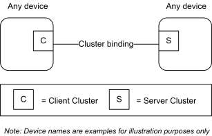

CHAPTER 2 FOUNDATION ¶
This library is made of individual chapters such as this one. See Document Control in the document header for a list of all chapters and documents. References between chapters are made using a X.Y notation where X is the chapter and Y is the sub-section within that chapter. References to external documents are contained in Chapter 1 and are made using [Rn] notation.
2.1 Scope and Purpose ¶
This chapter provides an entry point into the documentation for the Zigbee Cluster Library (ZCL) and specifies the elements that are general across the entire library.
The Zigbee PRO [R1] frame structure is specified along with global commands used to manipulate attributes from all the clusters. In addition, a set of data types is defined that can be used to represent attributes and a common set of status values returned by commands.
Frame formats and fields that are prefixed with ‘ZCL’ are particular to the Zigbee PRO message encoding of cluster commands. In the future, it may be that such encodings will be moved to a separate document, and this document will then only be a data model dictionary of abstract cluster specifications. As of now, the concrete encodings for Zigbee PRO are included part of this document and can be ignored when this document is referenced for other (non-Zigbee PRO) encodings.
2.2 Cluster Library Overview ¶
This document is intended to act as a repository for cluster functionality and it is a working library with regular updates as new functionality is added. A developer constructing a new application SHOULD use this document to find relevant cluster functionality that can be incorporated into the new application so as not to “re-invent the wheel”. This also allows applications to be developed with more of an object-oriented style approach.
2.2.1 Architecture and Data Model ¶
Each cluster specification in this document defines an independent functional entity. Each cluster specification is agnostic regarding functions beyond its purpose and scope, including overall requirements of the application or device. An application cluster SHOULD have no dependencies outside its application domain. A utility cluster MAY provide an interface to other layers (e.g. Groups cluster for group addressing).
Please see [Z5] Application Architecture for more details.
2.2.1.1 Cluster Identifier ¶
A cluster identifier SHALL map to a single cluster specification. A cluster identifier also defines the purpose of a cluster instance. More than one cluster identifier, each with a unique purpose, MAY map to a single more abstract cluster specification. For example: A Concentration Measurement cluster specification MAY be quite abstract but have many mapped cluster identifiers each with a more concrete purpose, such as CO2 measurement in air, by volume.
Please see [Z5] Application Architecture for more details.
2.2.1.2 Extensibility Model ¶
A cluster specification MAY be derived from a base cluster specification. A derived cluster specification SHALL add specific requirements (attributes, commands, behavior, dependencies, etc) to the base specification. A derived specification MAY reduce optionality by limiting the optional requirements from the base specification.
All new attribute and command definitions for the derived cluster SHALL be specified in the base cluster specification as optional, to maintain, in one specification, the identifier name space and communication behavior. Other behavior and dependencies that are specific to the derived cluster MAY also be specified in the base cluster, if it is deemed reusable by future derived clusters.
A derived cluster specification SHALL have the same mandatory requirements as the base cluster specification. A derived specification MAY have mandatory requirements that are optional in the base specification.
A derived cluster specification defines its own revision (ClusterRevision attribute) that is independent of the base specification.
Conversely, a base cluster may be defined from an original more specific cluster, which then becomes a derived cluster.
When considering the addition of one or more clusters to this specification, one SHALL explore the possibility of either deriving a cluster from an existing cluster, or creating a base cluster to map or derive new and existing cluster identifiers. This allows the reuse of approved and validated specifications and test plans.
Please see [Z5] Application Architecture for more details.
2.2.1.3 Instance Model ¶
If a device endpoint supports both a derived server cluster identifier and its base server cluster identifier, then both SHALL represent a single instance and operate as a single entity. This makes it possible to deploy a new device endpoint with both a base and derived cluster identifiers, which SHALL remain backward compatible to legacy devices that support only the original cluster identifier.
Cluster identifiers that are mapped to a single base cluster specification, but are defined for distinctly different purposes, MAY exist together on a device endpoint. If there is no base cluster identifier defined, or no base cluster identifier exists on the same endpoint, then each cluster identifier SHALL represent a separate instance.
Please see [Z5] Application Architecture for more details.
2.2.1.4 Conformance Model ¶
Specified behavior SHALL be Mandatory (M), Optional (O), or Deprecated (D). Mandatory behavior is usually dependent on other factors. For example: The mandatory behavior defined in a cluster server specification, is only mandatory, if the cluster identifier is discoverable as a server on the device. Attributes and commands MAY also be dependent on the support of other optional attributes. This is true when a feature of a cluster requires a complete set of attributes and commands.
Deprecated attributes and commands SHALL be noted as deprecated and description text SHALL be deleted.
2.2.2 Client/Server Model ¶
For most clusters, a client/server model is employed. This model is illustrated in Figure 2-1.
Figure 2-1. Client Server Model ¶

A cluster is a related collection of commands and attributes, which together define an interface to specific functionality. Typically, the entity that stores the attributes of a cluster is referred to as the server of that cluster and an entity that affects or manipulates those attributes is referred to as the client of that cluster. However, if required, attributes MAY also be present on the client of a cluster.
Commands that allow devices to manipulate attributes, e.g., in this document the read attribute (see 2.5.1) or write attribute (see 2.5.3) commands, are (typically) sent from a client device and received by the server device. Any response to those commands, e.g., in this document the read attribute response (see 2.5.2) or the write attribute response (see 2.5.5 commands), are sent from the server device and received by the client device.
Conversely, the command that facilitates dynamic attribute reporting, i.e., the report attribute command (see 2.5.11) is (typically) sent from the server device (as typically this is where the attribute data itself is stored) and sent to the client device that has been bound to the server device.
A type 1 cluster’s primary function is to initiate transactions from the client to the server. For example: An On/Off client sends commands (data) to the On/Off server. A type 2 cluster’s primary function is to initiate transactions from the server to the client. For example: A Temperature Measurement server reports to the Temperature Measurement client. Please see [Z5] Application Architecture for more details.
The clusters supported by an application are identified through the simple descriptor (see [Z1] & [Z6]), specified on each active endpoint of a device. In the simple descriptor, the application input cluster list SHALL contain the list of server clusters supported on the device and the application output cluster list SHALL contain the list of client clusters supported on the device.
Methods and commands to discover and commission clusters are not defined in the document and are described in other documents such as [Z6] Zigbee PRO Base Device Specification.1
2.3 Functional Description ¶
Global requirements for all clusters and commands are described here.
2.3.1 Transmission ¶
ZCL frames are transmitted via the APS sub-layer by issuing the APSDE-DATA.request primitive.
All sub-fields of ZCL frames, including individual bits, that are unspecified, or specified as reserved, SHALL be set to zero for transmission. This applies to all ZCL frames, including cluster-specific frames. Similarly, all reserved or unspecified bits of attributes of data type class Bitmap SHALL be set to zero for transmission.
1 CCB 2874
2.3.2 Reception ¶
ZCL frames are received via the APS sub-layer by the reception of the APSDE-DATA.indication primitive.
On receipt of a command (including both general and cluster-specific commands) the device SHALL attempt to parse and execute the command. During the parsing process for a non-manufacturer-specific command, it SHALL ignore all reserved sub-fields of the ZCL frame, including individual reserved bits.
Note that, if any of these sub-fields are not set to zero, this MAY indicate that the format or interpretation of the frame has been updated. However, it is the responsibility of the specifier of such an updated format that it be backward compatible, i.e., any new format will result in the same functionality as before when parsed by a device that supports the previous version of the cluster. Any additional octets found appended to the frame SHALL also be ignored, as these MAY be added as part of such an updated frame format.
If the command is manufacturer-specific, handling of reserved sub-fields is determined by the manufacturer.
If required, the device SHALL then generate a response to the command. Responses are detailed in the specification of each command. If there is no response specified for a particular set of circumstances, (e.g., if the command has been rejected or is not recognized, or the command has succeeded but there is no response specified to indicate success), the Default Response command SHALL be generated, taking into account the conditions in 2.5.12.2. The status code returned by the Default Response command SHALL be one of the status enumerations listed in Table 2-12.
2.3.2.1 Broadcast Endpoint ¶
The device processing a message sent to the broadcast endpoint (0xff) SHALL:
- only deliver a copy of the message to the endpoints supporting the cluster indicated in the APS Header.
- follow the Default Response command behavior described in section 2.5.12.2 (no response for non- unicast messages).
- not generate error response messages, except when required by the Default Response command behav- ior.
2.3.2.2 Broadcast Endpoint Recommendations ¶
Broadcast Endpoint Behavior Recommendations for Avoiding Network Congestion:
- A device SHOULD NOT send a broadcast message to the broadcast endpoint where a response is expected from every active endpoint. It is recommended to use discovery to determine the specific endpoint(s) per device and then send individual messages that target those specific endpoints.
- A device processing a message sent to the broadcast endpoint SHOULD jitter messages that are sent in response, especially when the nature of the message is such that it generates many responses (i.e. synchronization message). NOTE: Multicast group messages do not include an endpoint
2.3.3 Manufacturer Specific Extensions ¶
Manufacturers are free to extend the standard in the following ways:
- Add manufacturer specific clusters to a standard device endpoint.
- Add manufacturer specific commands to a standard cluster.
- Add manufacturer specific attributes to a standard cluster.
All communications regarding manufacturer specific extensions SHALL be transmitted with the manufacturer specific sub-field of the frame control field set to 1 and the manufacturer code included in the frame.
If the manufacturer code in a command frame is not recognized, the command is not carried out.
2.3.4 Attribute, Command and Variable Data ¶
This section defines terms (e.g. Variable) and rules for writing specification text, not for actual behavior.
2.3.4.1 Variable ¶
A cluster variable (or variable) is a cluster data point with a defined value that is referenced in a cluster specification. A cluster attribute is a variable with a defined identifier, data type and access type. Optional attributes MAY be referenced as variables in other attribute specifications within the same cluster specification.
A command field in a command payload is a variable with a defined data type.
A field within an attribute, such as one or more bits in a bitmap is a variable.
Cluster specifications also define variables that are not attributes or command fields, such as temporary calculated values, or persistent state values.
Any defined data value in a cluster specification is a variable.
2.3.4.2 Dependencies on Optional or Deprecated Variables ¶
If the specification text of a cluster depends on the value of an optional or deprecated variable (e.g. attribute, command field, etc) of the same cluster, then the variable SHALL have a well-defined default value that SHALL be used in place of the missing variable. This rule SHALL be recursive if there is a chain of dependencies. A deprecated attribute SHALL remain in a cluster’s attribute table as a placeholder, with a default, if required.
A fixed field in a command format definition SHALL always be present2 and SHALL NOT be deprecated. However, the behavior associated with a field may be deprecated. It is good practice to define a default value when deprecating a fixed field. See below for further default value requirements3
2.3.4.3 Default Value ¶
If the default value of a variable is specified as “MS” or “ms”, then there is no default value and the application must return a manufacturer specific valid value that is in the valid range. A variable SHALL have a defined default value when:
- the variable is new, and a default is required for backwards compatibility with legacy instances4
- the variable is optional or deprecated (see 2.3.4.2)5
- an initial value is needed before the application starts
- the value cannot be determined by the application for the instance
- the attribute is not implemented, but there is a dependency on the attribute value
2 CCB 2287 for fixed fields in Energy commands that have defaults that mean fields is ignored 3 CCB 2871 deprecating command fields and attributes 4 CCB 2287 for fixed fields in Energy commands that have defaults that mean fields is ignored 5 CCB 2877 command fields are variables with possible dependencies
If the default value is not specified in this specification, then the default value is the Non-Value as specified in the data type specification, if defined. If no Non-Value is specified, then the default value SHALL be zero. See 2.6.2 for data types and definition of Non-Value
2.3.4.4 Attribute Access ¶
Attributes MAY support these types of access that are listed in each cluster specification’s attribute table for each attribute:
| Access | Abrev | Description |
|---|---|---|
| Read | R | global commands that read the attribute value |
| Write | W | global commands that write a new value to the attribute |
| Read/Write | RW | Supports Read and Write access |
| Read*Write | R*W | Supports Read access. Write access as determined by the attrib- ute implementation. If not writable, a returned status field SHALL be READ ONLY, unless specified otherwise. |
| Report | P | global commands that report the value attribute or configure the attribute for reporting |
| Scene | S | if a Scenes server cluster instance is on the same endpoint, then the attribute is accessed through a scene as an extension field in the scenes table |
Local specific cluster commands for the cluster supporting the attribute MAY also access the attributes as defined in each cluster specification.
2.3.4.5 Global Attributes ¶
Cluster global attributes (see 2.6.1.3) are either mandatory or optional. All cluster instances SHALL support mandatory global attributes.
Table 2-1. Global Attributes ¶
| Id | Name | Type | Range | Access | Def | M/O |
|---|---|---|---|---|---|---|
| 0xfffd | ClusterRevision | uint16 | 0x0001 - 0xfffe | R | 0 | M |
| 0xfffe | AttributeReportingStatus | enum8 | 0x00 - 0xff | R | - | O |
2.3.4.5.1.1 ClusterRevision Attribute ¶
The ClusterRevision global attribute is mandatory for all cluster instances, client and server, conforming to ZCL revision 6 (ZCL6) and later ZCL revisions. A history of revision numbers for a cluster specification release is listed in the Revision History section for a cluster specification. Each new revision of a cluster specification SHALL specify a new revision number incremented (by 1) from the last. The latest, or last revision number in a cluster Revision History is the revision number for the cluster specification.6 ClusterRe-vision SHALL represent the latest revision number of the cluster specification that has been implemented.
6 CCB 2550 2885 clarify that Revision History table shows the latest valid ClusterRevision value,
An implementation of a cluster specification before revision 6 of this Cluster Library SHALL have an assumed cluster revision of 0 (zero). For a new cluster specification, the initial value for the ClusterRevision attribute SHALL be 1 (not zero).
An implementation of a new revision of a cluster specification SHALL interoperate with an implementation of an older revision of the cluster specification.
Interoperability with a cluster MAY require reading the ClusterRevision attribute. For example: If a new product application supporting revision 3 of cluster X wishes to take advantage of the new behavior that is mandated by revision 3, then the application SHOULD read the revision of the corresponding cluster X in each remote application. If a corresponding cluster X supports revision 3 or greater, than the behavior is supported. Conversely: Backward compatibility MAY require that a new cluster revision read the ClusterRe-vision of a corresponding cluster to support interoperability with legacy cluster revisions.
Please see [Z5] Application Architecture for more details.
2.3.4.5.2 AttributeReportingStatus Attribute ¶
When reporting requires sending multiple Report Attributes commands, this attribute SHOULD be included in the last attribute record, to indicate that all required attributes have been reported, or that there are still attributes pending to be reported. The enumerated values for this attribute are outlined below:
Table 2-2. AttributeReportingStatus Enumerations ¶
| Enumerated Value | Status |
|---|---|
| 0x00 | Pending |
| 0x01 | Attribute Reporting Complete |
2.3.5 Persistent Data ¶
Persistent data is persistent across a restart. A restart is a program restart (warm start) or power cycle (cold start), but not a factory reset.
Cluster attributes that represent configuration data SHALL be persistent data unless otherwise specified. For example: a writeable attribute that persistently changes the behavior (or mode) of the cluster. Examples of non-configuration data: data that is calculated or comes from an external source, such as a sensor value, a time value, etc.
Many clusters define persistent data that are not attributes. For example: The scene table that is part of a Scene cluster instance, or the Alarm Table in the Alarms cluster.
Commissioning or configuration data that is created to allow the cluster to perform its function is persistent data. For example: A reporting configuration for a cluster attribute.
An APS group table entry and an APS binding are both persistent data across a restart.
A factory reset is a deliberate behavior to reset the above described persistent data back to its original state when the product left the factory.
2.4 Command Frame Formats ¶
All commands, defined in this specification, SHALL be transmitted to the stack using the message service.
The transmission order for octets and bits of all ZCL elements is as specified in section 1.2.1.3 of the Zigbee Specification [Z1], i.e., least significant octet and bit first.
The command frame formats described in this document are not free-form and fields are positional. Some fields are dependent on a preceding field value (such as a length or format bitmap). All other fields are fixed and SHALL be present if a subsequent field is included in the frame. Optional fields at the end of a frame MAY be omitted, but also have requirements for defined default values (see 2.3.4.2 and 2.3.4.3).
2.4.1 General Frame Format ¶
The ZCL frame format is composed of a ZCL header and a ZCL payload. The general ZCL frame SHALL be formatted as illustrated in Figure 2-2.
Figure 2-2. Format of the General ZCL Frame ¶
| Bits: 8 | 0/16 | 8 | 8 | Variable |
|---|---|---|---|---|
| Frame control | Manufacturer code | Transaction sequence number | Command identifier | Frame payload |
| ZCL header | ZCL payload |
2.4.1.1 Frame Control Field ¶
The frame control field is 8 bits in length and contains information defining the command type and other control flags. The frame control field SHALL be formatted as shown in Figure 2-3. Bits 5-7 are reserved for future use and SHALL be set to 0.
Figure 2-3. Format of the Frame Control Field ¶
| Bits: 0-1 | 2 | 3 | 4 | 5-7 |
|---|---|---|---|---|
| Frame type | Manufacturer specific | Direction | Disable Default Response | Reserved |
2.4.1.1.1 Frame Type Sub-field ¶
The frame type sub-field is 2 bits in length and SHALL be set to one of the non-reserved values listed in
Figure 2-4. ¶
Figure 2-4. Values of the Frame Type Sub-field ¶
| Frame Type | Description |
|---|---|
| 00 | Command is global for all clusters, including manufacturer specific clusters |
| 01 | Command is specific or local to a cluster |
2.4.1.1.2 Manufacturer Specific Sub-field ¶
The manufacturer specific sub-field is 1 bit in length and specifies whether this command refers to a manufacturer specific extension. If this value is set to 1, the manufacturer code field SHALL be present in the ZCL frame. If this value is set to 0, the manufacturer code field SHALL not be included in the ZCL frame. Manufacturer specific clusters SHALL support global commands (Frame Type 0b00).
2.4.1.1.3 Direction Sub-field ¶
The direction sub-field specifies the client/server direction for this command. If this value is set to 1, the command is being sent from the server side of a cluster to the client side of a cluster. If this value is set to 0, the command is being sent from the client side of a cluster to the server side of a cluster.
2.4.1.1.4 Disable Default Response Sub-field ¶
The disable Default Response sub-field is 1 bit in length. If it is set to 0, the Default Response command will be returned, under the conditions specified in 2.5.12.2. If it is set to 1, the Default Response command will only be returned if there is an error, also under the conditions specified in 2.5.12.2.
This field SHALL be set to 1, for all response frames generated as the immediate and direct effect of a previously received frame.
2.4.1.2 Manufacturer Code Field ¶
The manufacturer code field is 16 bits in length and specifies the assigned manufacturer code for proprietary extensions. This field SHALL only be included in the ZCL frame if the manufacturer specific sub-field of the frame control field is set to 1. Please see [Z12] Manufacturer Code Database for a list of manufacturer codes.
2.4.1.3 Transaction Sequence Number ¶
The Transaction Sequence Number field is 8 bits in length and specifies an identification number for a single transaction that includes one or more frames in both directions. Each time the first frame of a transaction is generated, a new value SHALL be copied into the field. When a frame is generated as the specified effect on receipt of a previous frame, then it is part of a transaction, and the Transaction Sequence Number SHALL be copied from the previously received frame into the generated frame. This includes a frame that is generated in response to request frame.
The Transaction Sequence Number field can be used by a controlling device, which MAY have issued multiple commands, so that it can match the incoming responses to the relevant command.
2.4.1.4 Command Identifier Field ¶
The Command Identifier field is 8 bits in length and specifies the cluster command being used. If the frame type sub-field of the frame control field is set to 0b00, the command identifier corresponds to one of the nonreserved values of Table 2-3. If the frame type sub-field of the frame control field is set to 0b01, the command identifier corresponds to a cluster specific command. The cluster specific command identifiers can be found in each individual document describing the clusters (see also 2.2.1.1).
2.4.1.5 Frame Payload Field ¶
The frame payload field has a variable length and contains information specific to individual command types. The maximum payload length for a given command is limited by the stack profile in use, in conjunction with the applicable cluster specification and application profile. Fragmentation will be used where available.
2.5 General Command Frames ¶
General command frames are used for manipulating attributes and other general tasks that are not specific to an individual cluster.
The command frames defined in this document are listed in Table 2-3. Each command frame SHALL be constructed with the frame type sub-field of the frame control field set to 0b00.
All clusters (server and client) SHALL support generation, reception and execution of the Default Response command.
Except for the optional Discover Attributes Extended commands and the optional Discover Commands commands, each cluster (server or client) that implements attributes SHALL support reception of, execution of, and response to all commands to discover, read, and write these attributes. However, if no attributes with structured types are supported, it is not required to support the structured read and write commands.
Implementation of commands to report, Configure Reporting of, and Read Reporting Configuration of attributes is only mandatory if the cluster has attributes whose reportability is mandatory.
Generation of request commands (e.g., Read Attributes, Write Attributes, etc), is application dependent.
Table 2-3. Commands ¶
| Command Identifier Field Value | Description |
|---|---|
| 0x00 | Read Attributes |
| 0x01 | Read Attributes Response |
| 0x02 | Write Attributes |
| 0x03 | Write Attributes Undivided |
| 0x04 | Write Attributes Response |
| 0x05 | Write Attributes No Response |
| 0x06 | Configure Reporting |
| 0x07 | Configure Reporting Response |
| 0x08 | Read Reporting Configuration |
| 0x09 | Read Reporting Configuration Response |
| 0x0a | Report attributes |
| 0x0b | Default Response |
| 0x0c | Discover Attributes |
| 0x0d | Discover Attributes Response |
| 0x0e | Read Attributes Structured |
| 0x0f | Write Attributes Structured |
| 0x10 | Write Attributes Structured response |
| 0x11 | Discover Commands Received |
| 0x12 | Discover Commands Received Response |
| 0x13 | Discover Commands Generated |
| 0x14 | Discover Commands Generated Response |
| 0x15 | Discover Attributes Extended |
|---|---|
| 0x16 | Discover Attributes Extended Response |
2.5.1 Read Attributes Command ¶
2.5.1.1 Read Attributes Command Frame Format ¶
The Read Attributes command frame SHALL be formatted as illustrated in Figure 2-5.
Figure 2-5. Format of the Read Attributes Command Frame ¶
| Octets: Variable | 2 | 2 | … | 2 |
|---|---|---|---|---|
| ZCL header | Attribute identifier 1 | Attribute identifier 2 | … | Attribute identifier n |
2.5.1.1.1 ZCL Header Fields ¶
The frame control field SHALL be specified as follows. The frame type sub-field SHALL be set to indicate a global command (0b00). The manufacturer specific sub-field SHALL be set to 0 if this command is being used to Read Attributes defined for any cluster in the ZCL or 1 if this command is being used to read manufacturer specific attributes.
The command identifier field SHALL be set to indicate the Read Attributes command (see Table 2-3).
2.5.1.1.2 Attribute Identifier Field ¶
The attribute identifier field is 16 bits in length and SHALL contain the identifier of the attribute that is to be read.
2.5.1.2 When Generated ¶
The Read Attributes command is generated when a device wishes to determine the values of one or more attributes located on another device. Each attribute identifier field SHALL contain the identifier of the attribute to be read.
2.5.1.3 Effect on Receipt ¶
On receipt of this command, the device SHALL process each specified attribute identifier and generate a Read Attributes Response command. The Read Attributes Response command SHALL contain as many read attribute status records as attribute identifiers included in this command frame, subject to applicable space limitations. Each read attribute status record SHALL contain the corresponding attribute identifier from this command frame, a status value evaluated as described below, and, depending on the status value, the value of the attribute itself.
For each attribute identifier included in the command frame, the device SHALL create an attribute status record as follows:
If the attribute identifier does not correspond to an attribute that exists on this device, the device SHALL set the status field of the corresponding read attribute status record to UNSUPPORTED_ATTRIBUTE and SHALL not include an attribute value field.
If the attribute identified by the attribute identifier is supported, the device SHALL determine if the attribute status record carrying the attribute’s current value fits into the remaining space available in the response frame. If the status record does not fit, the device SHALL set the status field of the corresponding read attribute status record to INSUFFICIENT_SPACE and not include the data type and value fields. Otherwise the device SHALL set the status field of the corresponding read attribute status record to SUCCESS and SHALL set the attribute value field to its current value.
If the resulting attribute status record does not fit into the response frame, the device SHALL transmit the response frame as assembled so far and terminate this process.
Otherwise, the device SHALL then move on to the next attribute identifier.
2.5.2 Read Attributes Response Command ¶
2.5.2.1 Read Attributes Response Command Frame Format ¶
The Read Attributes Response command frame SHALL be formatted as illustrated in Figure 2-6.
Figure 2-6. Format of Read Attributes Response Command Frame ¶
| Octets: Variable | Variable | Variable | … | Variable |
|---|---|---|---|---|
| ZCL header | Read attribute status record 1 | Read attribute status record 2 | … | Read attribute status record n |
Each read attribute status record SHALL be formatted as illustrated in Figure 2-7.
Figure 2-7. Format of the Read Attributes Status Record Field ¶
| Octets: 2 | 1 | 0 / 1 | 0 / Variable |
|---|---|---|---|
| Attribute identifier | Status | Attribute data type | Attribute value |
2.5.2.1.1 ZCL Header Fields ¶
The frame control field SHALL be specified as follows. The frame type sub-field SHALL be set to indicate a global command (0b00). The manufacturer specific sub-field SHALL be set to 0 if this command is being used as a response to reading attributes defined for any cluster in the ZCL or 1 if this command is being used as a response to reading manufacturer specific attributes.
The command identifier field SHALL be set to indicate the Read Attributes Response command (see Table 2-3).
2.5.2.1.2 Attribute Identifier Field ¶
The attribute identifier field is 16 bits in length and SHALL contain the identifier of the attribute that has been read (or of which an element has been read). This field SHALL contain the same value that was included in the corresponding attribute identifier field of the original Read Attributes or Read Attributes Structured command.
2.5.2.1.3 Status Field ¶
The status field is 8 bits in length and specifies the status of the read operation on this attribute. This field SHALL be set to SUCCESS, if the operation was successful, or an error code, as specified in 2.5.1.3, if the operation was not successful.
2.5.2.1.4 Attribute Data Type Field ¶
The attribute data type field SHALL contain the data type of the attribute in the same Read Attributes status record (see 2.6.2). This field SHALL only be included if the associated status field contains a value of SUC- CESS.
2.5.2.1.5 Attribute Value Field ¶
The attribute value field is variable in length and SHALL contain the current value of this attribute. This field SHALL only be included if the associated status field contains a value of SUCCESS.
For an attribute or element of simple type (not array, structure, set or bag), this field has the format shown in the Table of Data Types (see 2.6.2). For an attribute or element of type array, set or bag, this field has the format shown in Figure 2-8.
Figure 2-8. Format of the Attribute Value Field for an Array, Set or Bag ¶
| Octets: 1 | 2 | Variable | … | Variable |
|---|---|---|---|---|
| Element type | Number of elements (m) | Element value 1 | … | Element value m |
(NB The reason that the Element type field is before the Number of elements field is so that the latter field is in the logical position for the zeroth element.)
If the Number of elements field has the value 0xffff, this indicates that the attribute or element being read is invalid / undefined. In this case, or if the Number of elements field has the value 0, no Element value fields are included.
For an attribute or element of type structure, this field has the format shown in Figure 2-9.
Figure 2-9. Format of the Attribute Value Field for a Structure ¶
| Octets: 2 | 1 | Variable | … | 1 | Variable |
|---|---|---|---|---|---|
| Number of elements (m) | Element type 1 | Element value 1 | … | Element type m | Element value m |
In both figures, the Element value subfield follows the same format as that of the attribute value field. This format is thus recursive to any required depth (see Selector Field for limitations).
If the Number of elements field has the value 0xffff, this indicates that the attribute or element being read is invalid / undefined. In this case, or if the Number of elements field has the value 0, no Element type or Element value fields are included.
2.5.2.2 When Generated ¶
The Read Attributes Response command is generated in response to a Read Attributes or Read Attributes Structured command. The command frame SHALL contain a read attribute status record for each attribute identifier specified in the original Read Attributes or Read Attributes Structured command. For each read attribute status record, the attribute identifier field SHALL contain the identifier specified in the original Read Attributes or Read Attributes Structured command. The status field SHALL contain a suitable status code, as detailed in 2.5.1.3.
The attribute data type and attribute value field SHALL only be included in the read attribute status record if the associated status field contains a value of SUCCESS and, where present, SHALL contain the data type and current value, respectively, of the attribute, or element thereof, that was read.
The length of this command may exceed a single frame, and thus fragmentation support may be needed to return the entire response If fragmentation is not supported, only as many read attribute status records as will fit in the frame SHALL be returned.
2.5.2.3 Effect on Receipt ¶
On receipt of this command, the originator is notified of the results of its original Read Attributes attempt and, for each successful request, the value of the requested attribute.
If fragmentation is not supported, and some trailing attribute status records have not been returned, due to space limitations in the frame, the originator may issue an additional Read Attributes or Read Attributes Structured command to obtain their values.
2.5.3 Write Attributes Command ¶
2.5.3.1 Write Attributes Command Frame Format ¶
The Write Attributes command frame SHALL be formatted as illustrated in Figure 2-10.
Figure 2-10. Format of the Write Attributes Command Frame ¶
| Octets: Variable | Variable | Variable | … | Variable |
|---|---|---|---|---|
| ZCL header | Write attribute record 1 | Write attribute record 2 | … | Write attribute record n |
Each write attribute record SHALL be formatted as illustrated in Figure 2-11.
Figure 2-11. Format of the Write Attribute Record Field ¶
| Octets: 2 | 1 | Variable |
|---|---|---|
| Attribute identifier | Attribute data type | Attribute data |
2.5.3.1.1 ZCL Header Fields ¶
The frame control field SHALL be specified as follows. The frame type sub-field SHALL be set to indicate a global command (0b00). The manufacturer specific sub-field SHALL be set to 0 if this command is being used to Write Attributes defined for any cluster in the ZCL or 1 if this command is being used to write manufacturer specific attributes.
The command identifier field SHALL be set to indicate the Write Attributes command (see Table 2-3).
2.5.3.1.2 Attribute Identifier Field ¶
The attribute identifier field is 16 bits in length and SHALL contain the identifier of the attribute that is to be written.
2.5.3.1.3 Attribute Data Type Field ¶
The attribute data type field SHALL contain the data type of the attribute that is to be written.
2.5.3.1.4 Attribute Data Field ¶
The attribute data field is variable in length and SHALL contain the actual value of the attribute that is to be written.
2.5.3.2 When Generated ¶
The Write Attributes command is generated when a device wishes to change the values of one or more attributes located on another device. Each write attribute record SHALL contain the identifier and the actual value of the attribute to be written.
2.5.3.3 Effect on Receipt ¶
On receipt of this command, the device SHALL attempt to process each specified write attribute record and SHALL construct a write attribute response command (2.5.5). Each write attribute status record of the constructed command SHALL contain the identifier from the corresponding write attribute record and a status value evaluated as described below.
For each write attribute record included in the command frame, the device SHALL make the error checks listed below, in the order shown. If an error is detected, a corresponding write attribute status record SHALL be generated, the status SHALL be set according to the check below, and the device SHALL move on to the next write attribute record.
- If the attribute is not supported on this device, the status field of the corresponding write attribute sta- tus record SHALL be set to UNSUPPORTED_ATTRIBUTE.
- If the attribute data type field is incorrect, the device SHALL set the status field of the corresponding write attribute status record to INVALID_DATA_TYPE.
- If the attribute is designated as read only, the device SHALL set the status field of the corresponding write attribute status record to READ_ONLY.
- If the device is not currently accepting write attribute commands for the attribute, the status field of the corresponding write attribute status record SHALL be set to NOT_AUTHORIZED or READ_ONLY.
- If the supplied value is not within the specified range of the attribute, the status field of the correspond- ing write attribute status record SHALL be set to INVALID_VALUE.
- If the device cannot support the supplied value, the status field of the corresponding write attribute sta- tus record SHALL be set to INVALID_VALUE. If the above error checks pass without generating a write attribute status record, the device SHALL write the supplied value to the identified attribute, and SHALL move on to the next write attribute record. When all write attribute records have been processed, the device SHALL generate the constructed Write Attributes Response command. If there are no write attribute status records in the constructed command, indicating that all attributes were written successfully, a single write attribute status record SHALL be included in the command, with the status field set to SUCCESS and the attribute identifier field omitted.
2.5.4 Write Attributes Undivided Command ¶
The Write Attributes Undivided command is generated when a device wishes to change the values of one or more attributes located on another device, in such a way that if any attribute cannot be written (e.g., if an attribute is not implemented on the device, or a value to be written is outside its valid range), no attribute values are changed.
In all other respects, including generation of a Write Attributes Response command, the format and operation of the command is the same as that of the Write Attributes command, except that the command identifier field SHALL be set to indicate the Write Attributes Undivided command (see Table 2-3).
2.5.5 Write Attributes Response Command ¶
2.5.5.1 Write Attributes Response Command Frame Format ¶
The Write Attributes Response command frame SHALL be formatted as illustrated in Figure 2-12.
Figure 2-12. Format of Write Attributes Response Command Frame ¶
| Octets: Variable | 3 | 3 | … | 3 |
|---|---|---|---|---|
| ZCL header | Write attribute status record 1 | Write attribute status record 2 | … | Write attribute status record n |
Each write attribute status record SHALL be formatted as illustrated in Figure 2-13.
Figure 2-13. Format of the Write Attribute Status Record Field ¶
| Octets: 1 | 2 |
|---|---|
| Status | Attribute identi- fier |
2.5.5.1.1 ZCL Header Fields ¶
The frame control field SHALL be specified as follows. The frame type sub-field SHALL be set to indicate a global command (0b00). The manufacturer specific sub-field SHALL be set to 0 if this command is being used as a response to writing attributes defined for any cluster in the ZCL or 1 if this command is being used as a response to writing manufacturer specific attributes.
The command identifier field SHALL be set to indicate the Write Attributes Response command (see Table 2-3).
2.5.5.1.2 Status Field ¶
The status field is 8 bits in length and specifies the status of the write operation attempted on this attribute, as detailed in 2.5.3.3.
Note that write attribute status records are not included for successfully written attributes, to save bandwidth. In the case of successful writing of all attributes, only a single write attribute status record SHALL be included in the command, with the status field set to SUCCESS and the attribute identifier field omitted.
2.5.5.1.3 Attribute Identifier Field ¶
The attribute identifier field is 16 bits in length and SHALL contain the identifier of the attribute on which the write operation was attempted.
2.5.5.2 When Generated ¶
The Write Attributes Response command is generated in response to a Write Attributes command.
2.5.5.3 Effect on Receipt ¶
On receipt of this command, the device is notified of the results of its original Write Attributes command.
2.5.6 Write Attributes No Response Command ¶
2.5.6.1 Write Attributes No Response Command Frame Format ¶
The Write Attributes No Response command frame SHALL be formatted as illustrated in Figure 2-14.
Figure 2-14. Write Attributes No Response Command Frame ¶
| Octets: Variable | Variable | Variable | … | Variable |
|---|---|---|---|---|
| ZCL header | Write attribute record 1 | Write attribute record 2 | … | Write attribute record n |
Each write attribute record SHALL be formatted as illustrated in Figure 2-11.
2.5.6.1.1 ZCL Header Fields ¶
The frame control field SHALL be specified as follows. The frame type sub-field SHALL be set to indicate a global command (0b00). The manufacturer specific sub-field SHALL be set to 0 if this command is being used to Write Attributes defined for any cluster in the ZCL or 1 if this command is being used to write manufacturer specific attributes.
The command identifier field SHALL be set to indicate the Write Attributes No Response command (see
Table 2-3). ¶
2.5.6.1.2 Write Attribute Records ¶
Each write attribute record SHALL be formatted as illustrated in Figure 2-11. Its fields have the same meaning and contents as the corresponding fields of the Write Attributes command.
2.5.6.2 When Generated ¶
The Write Attributes No Response command is generated when a device wishes to change the value of one or more attributes located on another device but does not require a response. Each write attribute record SHALL contain the identifier and the actual value of the attribute to be written.
2.5.6.3 Effect on Receipt ¶
There SHALL NOT be any response, error response, or Default Response command, to this command.
On receipt of this command, the device SHALL attempt to process each specified write attribute record.
For each write attribute record included in the command frame, the device SHALL first check that it corresponds to an attribute that is implemented on this device. If it does not, the device SHALL ignore the attribute and move on to the next write attribute record.
If the attribute identified by the attribute identifier is supported, the device SHALL check whether the attribute is writable. If the attribute is designated as read only, the device SHALL ignore the attribute and move on to the next write attribute record.
If the attribute is writable, the device SHALL check that the supplied value in the attribute data field is within the specified range of the attribute. If the supplied value does not fall within the specified range of the attribute, the device SHALL ignore the attribute and move on to the next write attribute record.
If the value supplied in the attribute data field is within the specified range of the attribute, the device SHALL write the supplied value to the identified attribute and move on to the next write attribute record.
2.5.7 Configure Reporting Command ¶
The Configure Reporting command is used to configure the reporting mechanism for one or more of the attributes of a cluster.
The individual cluster definitions specify which attributes SHALL be available to this reporting mechanism, however specific implementations of a cluster may make additional attributes available.
Note that attributes with data types of array, structure, set or bag cannot be reported.
2.5.7.1 Configure Reporting Command Frame Format ¶
The Configure Reporting command frame SHALL be formatted as illustrated in Figure 2-15.
Figure 2-15. Format of the Configure Reporting Command Frame ¶
| Octets: Variable | Variable | Variable | … | Variable |
|---|---|---|---|---|
| ZCL header | Attribute reporting configuration record 1 | Attribute reporting configuration record 2 | … | Attribute reporting con- figuration record n |
There SHALL be one attribute reporting configuration record for each attribute to be configured. Each such record SHALL be formatted as illustrated in Figure 2-16.
Figure 2-16. Format of the Attribute Reporting Configuration Record ¶
| Octets: 1 | 2 | 0/1 | 0/2 | 0/2 | 0/Variable | 0/2 |
|---|---|---|---|---|---|---|
| Direction | Attribute identifier | Attribute data type | Minimum reporting in- terval | Maximum reporting in- terval | Reportable change | Timeout period |
2.5.7.1.1 ZCL Header Fields ¶
The frame control field SHALL be specified as follows. The frame type sub-field SHALL be set to indicate a global command (0b00). The manufacturer specific sub-field SHALL be set to 0 if this command is being used to configure attribute reports defined for any cluster in the ZCL or 1 if this command is being used to configure attribute reports for manufacturer specific attributes.
The command identifier field SHALL be set to indicate the report configuration command (see Table 2-3).
2.5.7.1.2 Direction Field ¶
The direction field specifies whether values of the attribute are to be reported, or whether reports of the attribute are to be received.
If this value is set to 0x00, then the attribute data type field, the minimum reporting interval field, the maximum reporting interval field and the reportable change field are included in the payload, and the timeout period field is omitted. The record is sent to a cluster server (or client) to configure how it sends reports to a client (or server) of the same cluster.
If this value is set to 0x01, then the timeout period field is included in the payload, and the attribute data type field, the minimum reporting interval field, the maximum reporting interval field and the reportable change field are omitted. The record is sent to a cluster client (or server) to configure how it SHOULD expect reports from a server (or client) of the same cluster.
All other values of this field are reserved.
Table 2-4. Destination of Reporting Based on Direction Field ¶
| Direction Field | Destinations |
|---|---|
| 0x00 | The receiver of the Configure Reporting command SHALL Configure Report- ing to send to each destination as resolved by the bindings for the cluster host- ing the attributes to be reported. |
| 0x01 | This indicates to the receiver of the Configure Reporting command that the sender has configured its reporting mechanism to transmit reports and that, based on the current state of the sender’s bindings, the sender will send re- ports to the receiver. |
2.5.7.1.3 Attribute Identifier Field ¶
If the direction field is 0x00, this field contains the identifier of the attribute that is to be reported. If instead the direction field is 0x01, the device SHALL expect reports of values of this attribute.
2.5.7.1.4 Attribute Data Type Field ¶
The Attribute data type field contains the data type of the attribute that is to be reported.
2.5.7.1.5 Minimum Reporting Interval Field ¶
The minimum reporting interval field is 16 bits in length and SHALL contain the minimum interval, in seconds, between issuing reports of the specified attribute.
If this value is set to 0x0000, then there is no minimum limit, unless one is imposed by the specification of the cluster using this reporting mechanism or by the application.
2.5.7.1.6 Maximum Reporting Interval Field ¶
The maximum reporting interval field is 16 bits in length and SHALL contain the maximum interval, in seconds, between issuing reports of the specified attribute.
If this value is set to 0xffff, then the device SHALL not issue reports for the specified attribute, and the configuration information for that attribute need not be maintained. (Note: in an implementation using dynamic memory allocation, the memory space for that information may then be reclaimed).
If this value is set to 0x0000, and the minimum reporting interval field does not equal 0xffff there SHALL be no periodic reporting, but change based reporting SHALL still be operational.
If this value is set to 0x0000 and the Minimum Reporting Interval Field equals 0xffff, then the device SHALL revert to its default reporting configuration. The reportable change field, if present, SHALL be set to zero.
2.5.7.1.7 Reportable Change Field ¶
The reportable change field SHALL contain the minimum change to the attribute that will result in a report being issued. This field is of variable length. For attributes with 'analog' data type (see 2.6.2), the field has the same data type as the attribute. The sign (if any) of the reportable change field is ignored.
For attributes of 'discrete' data type (see 2.6.2), this field is omitted.
If the Maximum Reporting Interval Field is set to 0xffff (terminate reporting configuration), or the Maximum Reporting Interval Field is set to 0x0000 and the Minimum Reporting Interval Field equals 0xffff, indicating a (default reporting configuration) then if this field is present, it SHALL be set to zero upon transmission and ignored upon reception.
2.5.7.1.8 Timeout Period Field ¶
The timeout period field is 16 bits in length and SHALL contain the maximum expected time, in seconds, between received reports for the attribute specified in the attribute identifier field. If more time than this elapses between reports, this may be an indication that there is a problem with reporting.
If this value is set to 0x0000, reports of the attribute are not subject to timeout.
Note that, for a server/client connection to work properly using automatic reporting, the timeout value set for attribute reports to be received by the client (or server) cluster must be set somewhat higher than the maximum reporting interval set for the attribute on the server (or client) cluster.
2.5.7.2 When Generated ¶
The report configuration command is generated when a device wishes to configure a device to automatically report the values of one or more of its attributes, or to receive such reports.
2.5.7.3 Effect on Receipt ¶
On receipt of this command, the device SHALL attempt to process each attribute reporting configuration record and SHALL construct a Configure Reporting Response command. Each attribute status record of the constructed command SHALL contain an identifier from an attribute reporting configuration record and a status value evaluated as described below.
If the direction field is 0x00, indicating that the reporting intervals and reportable change are being configured, then
- If the attribute specified in the attribute identifier field is not implemented on this device, the device SHALL construct an attribute status record with the status field set to UNSUPPORTED_ATTRIB- UTE.
- Else, if the attribute type is set to array, structure, set or bag the device SHALL construct an attribute status record with the status field set to UNREPORTABLE_ATTRIBUTE7.
- Else, if the attribute identifier in this field cannot be reported (because it is not in the list of mandatory reportable attributes in the relevant cluster specification, and support has also not been implemented as
7 CCB 2543
a manufacturer option), the device SHALL construct an attribute status record with the status field set to UNREPORTABLE_ATTRIBUTE.
- Else, if the attribute data type field is incorrect, the device SHALL construct an attribute status record with the status field set to INVALID_DATA_TYPE.
- Else, if the minimum reporting interval field is less than any minimum set by the relevant cluster specification or application, or the value of the maximum reporting interval field is non-zero and is less than that of the minimum reporting interval field, the device SHALL construct an attribute status record with the status field set to INVALID_VALUE.
- Else, if the value of the minimum or maximum reporting interval field is not supported by the product, the device SHALL construct an attribute status record with the status field set to INVALID_VALUE.
- Else the device SHALL set the minimum and maximum reporting intervals and the reportable change for the attribute to the values contained in the corresponding fields.
Else the direction field is 0x01, indicating that the timeout period is being configured, then
If reports of values of the attribute identifier specified in the attribute identifier field cannot be received (because it is not in the list of mandatory reportable attributes in the relevant cluster specification, and support has also not been implemented as a manufacturer option), or the timeout feature is not supported, the device SHALL construct an attribute status record with the status field set to UNREPORTABLE_ATTRIBUTE8.
Else the device SHALL set the timeout value for the attribute identifier specified in the attribute identifier field to the value of the timeout period field. Note that the action to be taken by the device if the timeout period is exceeded is cluster and device dependent, including optionally taking no action.
When all attribute reporting configuration records have been processed, the device SHALL generate the constructed Configure Reporting Response command. If there are no attribute status records in the constructed command, indicating that all attributes were configured successfully, a single attribute status record SHALL be included in the command, with the status field set to SUCCESS and the direction and attribute identifier fields omitted.
The device SHALL then proceed to generate or receive attribute reports according the configuration just set up, by means of the Report Attributes command (see 2.5.11.2.1 through2.5.11.2.4). See Table 2-4 to determine the destination of the Report Attributes command.
2.5.8 Configure Reporting Response Command ¶
The Configure Reporting Response command is used to respond to a Configure Reporting command.
2.5.8.1 Configure Reporting Response Command Frame Format ¶
The Configure Reporting Response command frame SHALL be formatted as illustrated in Figure 2-17.
Figure 2-17. Format of the Configure Reporting Response Command Frame ¶
| Octets: Variable | 4 | 4 | … | 4 |
|---|---|---|---|---|
| ZCL header | Attribute status record 1 | Attribute status record 2 | … | Attribute status record n |
8 CCB 2543 error code wrong
Each attribute status record SHALL be formatted as illustrated in Figure 2-18.
Figure 2-18. Format of the Attribute Status Record Field ¶
| Octets: 1 | 1 | 2 |
|---|---|---|
| Status | Direction | Attribute identifier |
2.5.8.1.1 ZCL Header Fields ¶
The frame control field is specified as follows. The frame type sub-field SHALL be set to indicate a global command (0b00). The manufacturer specific sub-field SHALL be set to 0 if this command is being used as a response to configuring attribute reports defined for any cluster in the ZCL or 1 if this command is being used as a response to configuring attribute reports for manufacturer specific attributes.
The command identifier field SHALL be set to indicate the report configuration response command (see
Table 2-3). ¶
2.5.8.1.2 Direction Field ¶
The direction field specifies whether values of the attribute are reported (0x00), or whether reports of the attribute are received (0x01).
All other values of this field are reserved.
2.5.8.1.3 Status Field ¶
The status field specifies the status of the Configure Reporting operation attempted on this attribute, as detailed in 2.5.7.3.
Note that attribute status records are not included for successfully configured attributes, to save bandwidth. In the case of successful configuration of all attributes, only a single attribute status record SHALL be included in the command, with the status field set to SUCCESS and the direction and attribute identifier fields omitted.
2.5.8.2 When Generated ¶
The Configure Reporting Response command is generated in response to a Configure Reporting command.
2.5.8.3 Effect on Receipt ¶
On receipt of this command, the device is notified of the success (or otherwise) of its original Configure Reporting command, for each attribute.
2.5.9 Read Reporting Configuration Command ¶
The Read Reporting Configuration command is used to read the configuration details of the reporting mechanism for one or more of the attributes of a cluster.
2.5.9.1 Read Reporting Configuration Command Frame Format ¶
The Read Reporting Configuration command frame SHALL be formatted as illustrated in Figure 2-19.
Figure 2-19. Read Reporting Configuration Command Frame ¶
| Octets: Variable | 3 | 3 | … | 3 |
|---|---|---|---|---|
| ZCL header | Attribute record 1 | Attribute record 2 | … | Attribute record n |
Each attribute record SHALL be formatted as illustrated in Figure 2-20.
Figure 2-20. Format of the Attribute Status Record Field ¶
| Octets: 1 | 2 |
|---|---|
| Direction | Attribute identifier |
2.5.9.1.1 ZCL Header Fields ¶
The frame control field SHALL be specified as follows. The frame type sub-field SHALL be set to indicate a global command (0b00). The manufacturer specific sub-field SHALL be set to 0 if this command is being used to read the reporting configuration of attributes defined for any cluster in the ZCL or 1 if this command is being used to read the reporting configuration of manufacturer specific attributes.
The command identifier field SHALL be set to indicate the Read Reporting Configuration command (see
Table 2-3). ¶
2.5.9.1.2 Direction Field ¶
The direction field specifies whether values of the attribute are reported (0x00), or whether reports of the attribute are received (0x01).
All other values of this field are reserved.
2.5.9.1.3 Attribute Identifier Field ¶
The attribute identifier field SHALL contain the identifier of the attribute whose reporting configuration details are to be read.
2.5.9.2 Effect on Receipt ¶
On receipt of this command, a device SHALL generate a Read Reporting Configuration Response command containing the details of the reporting configuration for each of the attributes specified in the command (see 2.5.10).
2.5.10 Read Reporting Configuration Response Com- ¶
mand
The Read Reporting Configuration Response command is used to respond to a Read Reporting Configuration command.
2.5.10.1 Read Reporting Configuration Response Command Frame Format ¶
The Read Reporting Configuration Response command frame SHALL be formatted as illustrated in Figure 2-21.
Figure 2-21. Format of the Read Reporting Configuration Response Command Frame ¶
| Octets: Variable | Variable | Variable | … | Variable |
|---|---|---|---|---|
| ZCL header | Attribute reporting con- figuration record 1 | Attribute reporting configuration record 2 | … | Attribute reporting con- figuration record n |
There SHALL be one attribute reporting configuration record for each attribute record of the received Read Reporting Configuration command. Each such record SHALL be formatted as illustrated in Figure 2-22.
Figure 2-22. Attribute Reporting Configuration Record Field ¶
| Octets: 1 | 1 | 2 | 0/1 | 0/2 | 0/2 | 0/Variable | 0/2 |
|---|---|---|---|---|---|---|---|
| Status | Direction | Attribute identifier | Attribute data type | Minimum reporting interval | Maximum reporting in- terval | Reportable change | Timeout period |
2.5.10.1.1 ZCL Header Fields ¶
The frame control field SHALL be specified as follows. The frame type sub-field SHALL be set to indicate a global command (0b00). The manufacturer specific sub-field SHALL be set to 0 if this command is being used to for attributes specified in the ZCL or 1 if this command is being used for manufacturer specific attributes.
The command identifier field SHALL be set to indicate the Read Reporting Configuration Response command (see Table 2-3).
2.5.10.1.2 Status Field ¶
If the attribute is not implemented on the sender or receiver of the command, whichever is relevant (depending on direction), this field SHALL be set to UNSUPPORTED_ATTRIBUTE. If the attribute is supported, but is not capable of being reported, this field SHALL be set to UNREPORTABLE_ATTRIBUTE. If the attribute is supported and reportable, but there is no report configuration, this field SHALL be set to NOT_FOUND. Otherwise, this field SHALL be set to SUCCESS.
If the status field is not set to SUCCESS, all fields except the direction and attribute identifier fields SHALL be omitted.
2.5.10.1.3 Direction Field ¶
The direction field specifies whether values of the attribute are reported (0x00), or whether reports of the attribute are received (0x01).
If this value is set to 0x00, then the attribute data type field, the minimum reporting interval field, the maximum reporting interval field and the reportable change field are included in the payload, and the timeout period field is omitted. If this value is set to 0x01, then the timeout period field is included in the payload, and the attribute data type field, the minimum reporting interval field, the maximum reporting interval field and the reportable change field are omitted.
All other values of this field are reserved.
2.5.10.1.4 Attribute Identifier Field ¶
The attribute identifier field is 16 bits in length and SHALL contain the identifier of the attribute that the reporting configuration details apply to.
2.5.10.1.5 Minimum Reporting Interval Field ¶
The minimum reporting interval field is 16 bits in length and SHALL contain the minimum interval, in seconds, between issuing reports for the attribute specified in the attribute identifier field. If the minimum reporting interval has not been configured, this field SHALL contain the value 0xffff.
2.5.10.1.6 Maximum Reporting Interval Field ¶
The maximum reporting interval field is 16 bits in length and SHALL contain the maximum interval, in seconds, between issuing reports for the attribute specified in the attribute identifier field. If the maximum reporting interval has not been configured, this field SHALL contain the value 0xffff.
2.5.10.1.7 Reportable Change Field ¶
The reportable change field SHALL contain the minimum change to the attribute that will result in a report being issued. For attributes with Analog data type (see 2.6.2), the field has the same data type as the attribute. If the reportable change has not been configured, this field SHALL contain the invalid value for the relevant data type.
For attributes of Discrete or Composite data (see 2.6.2), this field is omitted.
2.5.10.1.8 Timeout Period Field ¶
The timeout period field is 16 bits in length and SHALL contain the maximum expected time, in seconds, between received reports for the attribute specified in the attribute identifier field. If the timeout period has not been configured, this field SHALL contain the value 0xffff.
2.5.10.2 When Generated ¶
The Read Reporting Configuration Response command is generated in response to a Read Reporting Configuration command. Only as many attribute reporting configuration records as will fit in the frame SHALL be returned.
2.5.10.3 Effect on Receipt ¶
On receipt of this command, the originator is notified of the results of its original Read Reporting Configuration command.
If some trailing attribute reporting configuration records have not been returned, due to space limitations in the frame, the originator may issue a further Read Reporting Configuration command to obtain their values.
2.5.11 Report Attributes Command ¶
The Report Attributes command is used by a device to report the values of one or more of its attributes to another device. Individual clusters, defined elsewhere in the ZCL, define which attributes are to be reported and at what interval. See 2.5.7 to determine the destination of the Report Attributes command.
2.5.11.1 Report Attributes Command Frame Format ¶
The Report Attributes command frame SHALL be formatted as illustrated in Figure 2-23.
Figure 2-23. Format of the Report Attributes Command Frame ¶
| Octets: Variable | Variable | Variable | … | Variable |
|---|---|---|---|---|
| ZCL header | Attribute report 1 | Attribute report 2 | … | Attribute report n |
Each attribute report field SHALL be formatted as illustrated in Figure 2-24.
Figure 2-24. Format of the Attribute Report Fields ¶
| Octets: 2 | 1 | Variable |
|---|---|---|
| Attribute identifier | Attribute data type | Attribute data |
2.5.11.1.1 ZCL Header Fields ¶
The frame control field SHALL be specified as follows. The frame type sub-field SHALL be set to indicate a global command (0b00). The manufacturer specific sub-field SHALL be set to 0 if this command is being used to Report Attributes defined for any cluster in the ZCL or 1 if this command is being used to report manufacturer specific attributes.
The command identifier field SHALL be set to indicate the Report Attributes command (see Table 2-3).
2.5.11.1.2 Attribute Identifier Field ¶
The attribute identifier field is 16 bits in length and SHALL contain the identifier of the attribute that is being reported. When reporting requires sending multiple Report Attributes commands see 2.3.4.5.2.
2.5.11.1.3 Attribute Data Type Field ¶
The attribute data type field contains the data type of the attribute that is being reported.
2.5.11.1.4 Attribute Data Field ¶
The attribute data field is variable in length and SHALL contain the actual value of the attribute being reported.
2.5.11.2 When Generated ¶
The Report Attributes command is generated when a device has been configured to report the values of one or more of its attributes to another device., and when the conditions that have been configured are satisfied. These conditions are detailed in the following sections.
A Report Attributes command may also be configured locally on a device at any time. Except for the source, a locally created report configuration SHALL be no different than a configuration received externally. A locally created report configuration SHALL support the same services as a configuration received externally.
If the destination of the Report Attributes Command cannot be determined, then the command SHALL not be generated. See 2.5.7 to determine the destination of the Report Attributes command.
2.5.11.2.1 Periodic Reporting ¶
A report SHALL be generated when the time that has elapsed since the previous report of the same attribute is equal to the Maximum Reporting Interval for that attribute (see 2.5.7.1.6). The time of the first report after configuration is not specified.
2.5.11.2.2 Changes to 'Discrete' Attributes ¶
If the attribute has a 'discrete' data type, a report SHALL be generated when the attribute undergoes any change of value. Discrete types are general data types (which are often used as sets of bit fields), logical types, bitmap types, enumerations, strings, identifiers, IEEE address and security key (see 2.6.2).
Reporting is subject to the Minimum Reporting Interval for that attribute (see 2.5.7.1.5). After a report, no further reports are sent during this interval.
2.5.11.2.3 Changes to 'Analog' Attributes ¶
If the attribute has an 'analog' data type, a report SHALL be generated when the attribute undergoes a change of value, in a positive or negative direction, equal to or greater than the Reportable Change for that attribute (see 2.5.7.1.7). The change is measured from the value of the attribute when the Reportable Change is configured, and thereafter from the previously reported value of the attribute.
Analog types are signed and unsigned integer types, floating point types and time types (see 2.6.2).
Reporting is subject to the Minimum Reporting Interval for that attribute (see 2.5.7.1.5). After a report, no further reports are sent during this interval.
2.5.11.2.4 Cluster Specific Conditions ¶
The specification for a cluster may add additional conditions for specific attributes of that cluster.
2.5.11.2.5 Consolidation of Attribute Reporting ¶
To reduce the resources (such as the number of timers) required for attribute reporting, a device may adapt the timing of reports by relaxing the configured minimum and maximum periods as described below. By employing these techniques, a device may limit the number of timers required to any manufacturer specific value, including use of only a single timer, though at the cost of some side effects, such as increased network traffic in some cases.
In consolidating timers, several principles apply:
- The maximum reporting interval of an attribute may be reduced, as it SHOULD not normally cause a problem to devices to receive reports more frequently than expected – typical reporting intervals are seconds to minutes. It may not be increased, as this may be incompatible with any timeout period set.
- The minimum reporting interval of an attribute may also be reduced. However, it may not be in- creased, as an application may be relying on receiving reports of changes to an attribute within a given delay time. Minimum values are generally used to reduce network traffic, but this is less important than ensuring that the application timing needs are satisfied.
- From (1), when consolidating the maximum reporting periods of two or more attributes together, the consolidated reporting period SHALL be equal to the lowest of the configured maximum intervals of the attributes to be reported.
- Similarly, from (2), when consolidating the minimum reporting periods of two or more attributes to- gether, the consolidated reporting period SHALL be equal to the lowest of the configured minimum intervals of the attributes to be reported.
As a first step, timers for attributes on the same cluster may be consolidated. Such adaptations SHOULD aim to send attribute reports for different attributes of the same cluster at the same time, so that they can be consolidated into fewer attribute reports, thus reducing network traffic.
To reduce the number of timers further, timers may be consolidated across clusters and endpoints if needed.
(Note that it is not generally possible to consolidate timeout values (see 2.5.7.1.8) of received attribute reports.)
2.5.11.3 Effect on Receipt ¶
On receipt of this command, a device is notified of the latest values of one or more of the attributes of another device.
2.5.12 Default Response Command ¶
2.5.12.1 Default Response Command Frame Format ¶
The Default Response command frame SHALL be formatted as illustrated in Figure 2-25.
Figure 2-25. Format of the Default Response Command Frame ¶
| Octets: Variable | 1 | 1 |
|---|---|---|
| ZCL header | Command identifier | Status code |
2.5.12.1.1 ZCL Header Fields ¶
The frame control field SHALL be specified as follows. The frame type sub-field SHALL be set to indicate a global command (0b00). The manufacturer specific sub-field SHALL be set to 0 if this command is being sent in response to a command defined for any cluster in the ZCL or 1 if this command is being sent in response to a manufacturer specific command.
The command identifier sub-field SHALL be set to indicate the Default Response command (see Table 2-3).
2.5.12.1.2 Command Identifier Field ¶
The command identifier field is 8 bits in length and specifies the identifier of the received command to which this command is a response.
2.5.12.1.3 Status Code Field ¶
The status code field is 8 bits in length and specifies either SUCCESS or the nature of the error that was detected in the received command. It SHALL be one of the status enumerations listed in Table 2-12.
2.5.12.2 When Generated ¶
The Default Response command SHALL be generated when all 4 of these criteria are met:
5. A device receives a unicast command that is not a Default Response command.
6. No other command is sent in response to the received command, using the same Transaction sequence
number as the received command.
7. The Disable Default Response bit of its Frame control field is set to 0 (see 2.4.1.1.4) or when an error
results.
8. The “Effect on Receipt” clause for the received command does not override the behavior of when a
Default Response command is sent.
If a device receives a command in error through a broadcast or multicast transmission, the command SHALL be discarded and the Default Response command SHALL not be generated.
If the identifier of the received command is not supported on the device, it SHALL set the command identifier field to the value of the identifier of the command received in error. The status code field SHALL be set to UNSUP_COMMAND9.
If the device receives a unicast cluster command to a particular endpoint, and the cluster does not exist on the endpoint, the status code field SHALL be set to UNSUPPORTED_CLUSTER. Receiving devices SHOULD accept other error status codes, such as FAILURE, from devices certified before ZCL revision 6.
The Default Response command SHALL be generated in response to reception of all commands, including response commands (such as the Write Attributes Response command), under the conditions specified above. However, the Default Response command SHALL not be generated in response to reception of another Default Response command.
2.5.12.3 Effect on Receipt ¶
On receipt of this command, the device is notified of the success or otherwise of the generated command with the same transaction sequence number (see 2.4.1.3).
2.5.13 Discover Attributes Command ¶
2.5.13.1 Discover Attributes Command Frame Format ¶
The Discover Attributes command frame SHALL be formatted as illustrated in Figure 2-26.
Figure 2-26. Format of the Discover Attributes Command Frame ¶
| Octets: Variable | 2 | 1 |
|---|---|---|
| ZCL header | Start attribute identifier | Maximum attribute identifiers |
2.5.13.1.1 ZCL Header Fields ¶
The frame control field SHALL be specified as follows. The frame type sub-field SHALL be set to indicate a global command (0b00). The manufacturer specific sub-field SHALL be set to 0 to discover standard attributes in a cluster or 1 to discover manufacturer specific attributes in either a standard or a manufacturer specific cluster.
The command identifier field SHALL be set to indicate the Discover Attributes command (see Table 2-3).
2.5.13.1.2 Start Attribute Identifier Field ¶
The start attribute identifier field is 16 bits in length and specifies the value of the identifier at which to begin the attribute discovery.
9 CCB 2477 Status Code Cleanup: UNSUP_COMMAND is renamed UNSUP_CLUSTER_COMMAND
2.5.13.1.3 Maximum Attribute Identifiers Field ¶
The maximum attribute identifiers field is 8 bits in length and specifies the maximum number of attribute identifiers that are to be returned in the resulting Discover Attributes Response command.
2.5.13.2 When Generated ¶
The Discover Attributes command is generated when a remote device wishes to discover the identifiers and types of the attributes on a device which are supported within the cluster to which this command is directed.
2.5.13.3 Effect on Receipt ¶
On receipt of this command, the device SHALL construct an ordered list of attribute information records, each containing a discovered attribute identifier and its data type, in ascending order of attribute identifiers. This list SHALL start with the first attribute that has an identifier that is equal to or greater than the identifier specified in the start attribute identifier field. The number of attribute identifiers included in the list SHALL not exceed that specified in the maximum attribute identifiers field.
The device SHALL then generate a Discover Attributes Response command containing the discovered attributes and their types, and SHALL return it to the originator of the Discover Attributes command.
2.5.14 Discover Attributes Response Command ¶
2.5.14.1 Discover Attributes Response Command Frame Format ¶
The Discover Attributes Response command frame SHALL be formatted as illustrated in Figure 2-27.
Figure 2-27. Discover Attributes Response Command Frame ¶
| Octets: Variable | 1 | 3 | 3 | … | 3 |
|---|---|---|---|---|---|
| ZCL header | Discovery complete | Attribute infor- mation 1 | Attribute infor- mation 2 | … | Attribute infor- mation n |
Each attribute information field SHALL be formatted as illustrated in Figure 2-28.
Figure 2-28. Format of the Attribute Report Fields ¶
| Octets: 2 | 1 |
|---|---|
| Attribute identifier | Attribute data type |
2.5.14.1.1 ZCL Header Fields ¶
The frame control field SHALL be specified as follows. The frame type sub-field SHALL be set to indicate a global command (0b00). The manufacturer specific sub-field SHALL be set to the same value included in the original Discover Attributes command.
The command identifier field SHALL be set to indicate the Discover Attributes Response command (see
Table 2-3). ¶
2.5.14.1.2 Discovery Complete Field ¶
The discovery complete field is a Boolean field. A value of 0 indicates that there are more attributes to be discovered that have an attribute identifier value greater than the last attribute identifier in the last attribute information field. A value of 1 indicates that there are no more attributes to be discovered.
2.5.14.1.3 Attribute Identifier Field ¶
The attribute identifier field SHALL contain the identifier of a discovered attribute. Attributes SHALL be included in ascending order, starting with the lowest attribute identifier that is greater than or equal to the start attribute identifier field of the received Discover Attributes command.
2.5.14.1.4 Attribute Data Type Field ¶
The attribute data type field SHALL contain the data type of the attribute in the same attribute report field (see 2.6.2).
2.5.14.2 When Generated ¶
The Discover Attributes Response command is generated in response to a Discover Attributes command.
2.5.14.3 Effect on Receipt ¶
On receipt of this command, the device is notified of the results of its attribute discovery request.
Following the receipt of this command, if the discovery complete field indicates that there are more attributes to be discovered, the device may choose to send subsequent discover attribute request commands to obtain the rest of the attribute identifiers. In this case, the start attribute identifier specified in the next attribute discovery request command SHOULD be set equal to one plus the last attribute identifier received in the Discover Attributes Response command.
2.5.15 Read Attributes Structured Command ¶
2.5.15.1 Read Attributes Structured Command Frame Format ¶
The Read Attributes Structured command frame SHALL be formatted as illustrated in Figure 2-29.
Figure 2-29. Format of Read Attributes Structured Command Frame ¶
| Octets: Variable | 2 | Variable | ... | 2 | Variable |
|---|---|---|---|---|---|
| ZCL header | Attribute identifier 1 | Selector 1 | ... | Attribute identifier n | Selector n |
2.5.15.1.1 ZCL Header Fields ¶
The frame control field SHALL be specified as follows. The frame type sub-field SHALL be set to indicate a global command (0b00). The manufacturer specific sub-field SHALL be set to 0 if this command is being used to Read Attributes defined for any cluster in the ZCL or 1 if this command is being used to read manufacturer specific attributes.
The command identifier field SHALL be set to indicate the Read Attributes Structured command (see Table 2-3).
2.5.15.1.2 Attribute Identifier Field ¶
The attribute identifier field is 16 bits in length and SHALL contain the identifier of the attribute that is to be read.
2.5.15.1.3 Selector Field ¶
Each attribute identifier field is followed by a selector field, which specifies whether the whole of the attribute value is to be read, or only an individual element of it. An individual element may only be read from attributes with types of Array or Structure.
The Selector field SHALL be formatted as illustrated in Figure 2-30.
Figure 2-30. Format of the Selector Field ¶
| Octets: 1 | 2 | ... | 2 |
|---|---|---|---|
| Indicator (m) | Index 1 | ... | Index m |
The Indicator subfield indicates the number of index fields that follow it. This number is limited to the range 0 - 15. It may be further limited by an application. All other values of this field are reserved.
If this subfield is 0, there are no index fields, and the whole of the attribute value is to be read. For attributes of type other than array or structure, this subfield SHALL have the value 0.
If this subfield is 1 or greater, the index fields indicate which element is to be read, nested to a depth of m. For example, if the attribute is an array of arrays (or structures), then if m = 2, index 1 = 5 and index 2 = 3, the third element of the fifth element of the attribute will be read.
Note that elements are numbered from 1 upwards for both arrays and structures. The zeroth element of an array or structure is readable, always has type 16 bit unsigned integer, and returns the number of elements contained in the array or structure.
2.5.15.2 When Generated ¶
The Read Attributes command is generated when a device wishes to determine the values of one or more attributes, or elements of attributes, located on another device. Each attribute identifier field SHALL contain the identifier of the attribute to be read.
2.5.15.3 Effect on Receipt ¶
On receipt of this command, the device SHALL process each specified attribute identifier and associated selector, and SHALL generate a Read Attributes Response command. The Read Attributes Response command SHALL contain as many read attribute status records as there are attribute identifiers included in this command frame. Each read attribute status record SHALL contain the corresponding attribute identifier from this command frame, a status value evaluated as described below, and, depending on the status value, the value of the attribute (or attribute element) itself.
For each attribute identifier included in the command frame, the device SHALL first check that it corresponds to an attribute that exists on this device, and that its associated selector field correctly indicates either the whole of the attribute or an element of the attribute. If it does not, the device SHALL set the status field of the corresponding read attribute status record to either UNSUPPORTED_ATTRIBUTE or INVALID_SE- LECTOR as appropriate, and SHALL not include an attribute value field. The device SHALL then move on to the next attribute identifier.
If the attribute identified by the attribute identifier is supported, and its associated selector field is valid, the device SHALL set the status field of the corresponding read attribute status record to SUCCESS and SHALL set the attribute value field to the value of the attribute (or its selected element). The device SHALL then move on to the next attribute identifier.
2.5.16 Write Attributes Structured Command ¶
2.5.16.1 Write Attributes Structured Command Frame Format ¶
The Write Attributes Structured command frame SHALL be formatted as illustrated in Figure 2-31.
Figure 2-31. Write Attributes Structured Command Frame ¶
| Octets: Variable | Variable | Variable | ... | Variable |
|---|---|---|---|---|
| ZCL header | Write attribute record 1 | Write attribute record 2 | ... | Write attribute record n |
Each write attribute record SHALL be formatted as illustrated in Figure 2-32.
Figure 2-32. Format of the Write Attribute Record Field ¶
| Octets: 2 | Variable | 1 | Variable |
|---|---|---|---|
| Attribute identifier | Selector | Attribute data type | Attribute value |
2.5.16.1.1 ZCL Header Fields ¶
The frame control field SHALL be specified as follows. The frame type sub-field SHALL be set to indicate a global command (0b00). The manufacturer specific sub-field SHALL be set to 0 if this command is being used to Write Attributes defined for any cluster in the ZCL or 1 if this command is being used to write manufacturer specific attributes.
The command identifier field SHALL be set to indicate the Write Attributes Structured command (see Table 2-3).
2.5.16.1.2 Attribute Identifier Field ¶
The attribute identifier field is 16 bits in length and SHALL contain the identifier of the attribute that is to be written (or an element of which is to be written).
2.5.16.1.3 Selector Field ¶
The selector field specifies whether the whole of the attribute value is to be written, or only an individual element of it. An individual element may only be written to attributes with types of Array, Structure, Set or Bag.
The Selector field SHALL be formatted as illustrated in Figure 2-33.
Figure 2-33. Format of the Selector Field ¶
| Octets: 1 | 2 | ... | 2 |
|---|---|---|---|
| Indicator (m) | Index 1 | ... | Index m |
2.5.16.1.4 Writing an Element to an Array or Structure ¶
When writing an element to an array or structure, the Indicator subfield indicates the number of index fields that follow it. This number is limited to the range 0 - 15 (i.e., the upper 4 bits of the Indicator field are set to zero). It may be further limited by an application.
If the Indicator subfield is 0, there are no index fields, and the whole of the attribute value is to be written.
If this subfield is 1 or greater, the index fields indicate which element is to be written, nested to a depth of m. For example, if the attribute is an array of arrays (or structures), then if m = 2, index 1 = 5 and index 2 = 3, the third element of the fifth element of the attribute will be written.
Note that elements are numbered from 1 upwards for both arrays and structures.
The zeroth element of an array or structure has type 16-bit unsigned integer, and holds the number of elements in the array or structure. The zeroth element of an array may optionally be written (this is application dependent) and has the effect of changing the number of elements of the array. If the number is reduced, the array is truncated. If the number is increased, the content of new elements is application dependent.
The zeroth element of a structure may not be written to. Writing to an element with an index greater than the number of elements in an array or structure is always an error.
2.5.16.1.5 Adding/Removing an Element to/from a Set or Bag ¶
This command may also be used to add an element to a set or bag, or to remove an element from a set or bag.
In this case, the lower 4 bits of the Indicator subfield still indicate the number of index fields that follow it, as the set may be an element of an array or structure, which may itself be nested inside other arrays or structures.
The upper 4 bits of the Indicator subfield have the following values:
0b0000
Write whole set/bag
0b0001
Add element to the set/bag
0b0010
Remove element from the set/bag
All other values are reserved.
2.5.16.1.6 Attribute Data Type Field ¶
The attribute data type field SHALL contain the data type of the attribute or element thereof that is to be written.
2.5.16.1.7 Attribute Value Field ¶
The attribute value field is variable in length and SHALL contain the actual value of the attribute, or element thereof, that is to be written. For an attribute or element of type array, structure, set or bag, this field has the same format as for the Read Attributes Structured command (see Read Attributes Structured Command).
2.5.16.2 When Generated ¶
The Write Attributes Structured command is generated when a device wishes to change the values of one or more attributes located on another device. Each write attribute record SHALL contain the identifier and the actual value of the attribute, or element thereof, to be written.
2.5.16.3 Effect on Receipt ¶
On receipt of this command, the device SHALL attempt to process each specified write attribute record and SHALL construct a write attribute structured response command. Each write attribute status record of the constructed command SHALL contain the identifier from the corresponding write attribute record and a status value evaluated as described below.
For each write attribute record included in the command frame, the device SHALL first check that it corresponds to an attribute that is implemented on this device and that its associated selector field correctly indicates either the whole of the attribute or an element of the attribute. If it does not (e.g., an index is greater than the number of elements of an array), the device SHALL set the status field of the corresponding write attribute status record to either UNSUPPORTED_ATTRIBUTE or INVALID_SELECTOR as appropriate and move on to the next write attribute record.
If the attribute identified by the attribute identifier is supported, the device SHALL check whether the attribute data type field is correct. (Note: If the element being written is the zeroth element of an array (to change the length of the array) the data type must be 16-bit unsigned integer). If not, the device SHALL set the status field of the corresponding write attribute status record to INVALID_DATA_TYPE and move on to the next write attribute record.
If the attribute data type is correct, the device SHALL check whether the attribute is writable. If the attribute is designated as read only, the device SHALL set the status field of the corresponding write attribute status record to READ_ONLY and move on to the next write attribute record. (Note: If an array may not have its length changed, its zeroth element is read only).
If the attribute is writable, the device SHALL check that all the supplied basic (e.g., integer, floating point) values in the attribute value field are within the specified ranges of the elements they are to be written to. If a supplied value does not fall within the specified range of its target element, the device SHALL set the status field of the corresponding write attribute status record to INVALID_VALUE, SHALL set the selector field of that record to indicate that target element, and SHALL move on to the next write attribute record.
The returned selector SHALL have the number of indices necessary to specify the specific low-level element that failed, which will be the same as or greater than the number of indices in the selector of the write attribute record. Note that if the element being written is the zeroth element of an array (to change the length of the array) and the requested new length is not acceptable to the application, the value being written is considered outside the specified range of the element.
If the value supplied in the attribute value field is within the specified range of the attribute, the device SHALL proceed as follows.
- If an element is being added to a set, and there is an element of the set that has the same value as the value to be added, the device SHALL set the status field of the corresponding write attribute status record to DUPLICATE_ENTRY and move on to the next write attribute record.
- Else, if an element is being removed from a set or a bag, and there is no element of the set or bag that has the same value as the value to be removed, the device SHALL set the status field of the corresponding write attribute status record to NOT_FOUND and move on to the next write attribute record.
- Otherwise, the device SHALL write, add or remove the supplied value to/from the identified attribute or element, as appropriate, and SHALL move on to the next write attribute record. In this (successful) case, a write attribute status record SHALL not be generated. (Note: If the element being written is the zeroth element of an array, the length of the array SHALL be changed. If the length is reduced, the array is truncated. If the length is increased, the content of new elements is application dependent.)
When all write attribute records have been processed, the device SHALL generate the constructed Write Attributes Response command. If there are no write attribute status records in the constructed command, because all attributes were written successfully, a single write attribute status record SHALL be included in the command, with the status field set to SUCCESS and the attribute identifier field omitted.
2.5.17 Write Attributes Structured Response Command ¶
2.5.17.1 Write Attributes Structured Response Command Frame Format ¶
The Write Attributes Response command frame SHALL be formatted as illustrated in Figure 2-34.
Figure 2-34. Write Attributes Structured Response Command Frame ¶
| Octets: Varia- ble | Variable | Variable | ... | Variable |
|---|---|---|---|---|
| ZCL header | Write attribute status record 1 | Write attribute status record 2 | ... | Write attribute status record n |
Each write attribute status record SHALL be formatted as illustrated in Figure 2-35.
Figure 2-35. Format of the Write Attribute Status Record Field ¶
| Octets: 1 | 2 | Variable |
|---|---|---|
| Status | Attribute identifier | Selector |
2.5.17.1.1 ZCL Header Fields ¶
The frame control field SHALL be specified as follows. The frame type sub-field SHALL be set to indicate a global command (0b00). The manufacturer specific sub-field SHALL be set to 0 if this command is being used to Write Attributes defined for any cluster in the ZCL or 1 if this command is being used to write manufacturer specific attributes.
The command identifier field SHALL be set to indicate the Write Attributes Structured response command (see Table 2-3).
2.5.17.1.2 Status Field ¶
The status field is 8 bits in length and specifies the status of the write operation attempted on this attribute, as detailed in Effect on Receipt2.5.16.3.
Note that write attribute status records are not included for successfully written attributes, to save bandwidth. In the case of successful writing of all attributes, only a single write attribute status record SHALL be included in the command, with the status field set to SUCCESS and the attribute identifier and selector fields omitted.
2.5.17.1.3 Attribute Identifier Field ¶
The attribute identifier field is 16 bits in length and SHALL contain the identifier of the attribute on which the write operation was attempted.
2.5.17.1.4 Selector Field ¶
The selector field SHALL specify the element of the attribute on which the write operation that failed was attempted. See Figure 2-33 for the structure of this field.
From the structure shown in Figure 2-33, note that for all attribute data types other than array or structure this field consists of a single octet with value zero. For array or structure types, a single octet with value zero indicates that no information is available about which element of the attribute caused the failure.
2.5.17.2 When Generated ¶
The Write Attributes Structured response command is generated in response to a Write Attributes Structured command.
2.5.17.3 Effect on Receipt ¶
On receipt of this command, the device is notified of the results of its original Write Attributes Structured command.
2.5.18 Discover Commands Received Command ¶
This command may be used to discover all commands processed (received) by this cluster, including optional or manufacturer-specific commands.
2.5.18.1 Discover Commands Received Command Frame Format ¶
The discover server commands command frame SHALL be formatted as follows.
Figure 2-36. Format of the Discover Server Commands Command Frame ¶
| Octets: | Variable | 1 | 1 |
|---|---|---|---|
| Field: | ZCL header | Start command identifier | Maximum command identifiers |
2.5.18.1.1 ZCL Header Fields ¶
The frame control field SHALL be specified as follows. The frame type sub-field SHALL be set to indicate a global command (0b00). The manufacturer-specific sub-field SHALL be set to 0 to discover standard commands in a cluster or 1 to discover manufacturer-specific commands in either a standard or a manufacturer-specific cluster. A manufacturer ID in this field of 0xffff (wildcard) will discover any manufacture-specific commands. The direction bit SHALL be 0 (client to server) to discover commands that the server can process. The direction bit SHALL be 1 (server to client) to discover commands that the client can process.
The command identifier field SHALL be set to indicate the Discover Commands Received command.
2.5.18.1.2 Start Command Identifier Field ¶
The start command identifier field is 8-bits in length and specifies the value of the identifier at which to begin the command discovery.
2.5.18.1.3 Maximum Command Identifiers Field ¶
The maximum command identifiers field is 8-bits in length and specifies the maximum number of command identifiers that are to be returned in the resulting Discover Commands Received Response.
2.5.18.2 When Generated ¶
The Discover Commands Received command is generated when a remote device wishes to discover the optional and mandatory commands the cluster to which this command is sent can process.
2.5.18.3 Effect on Receipt ¶
On receipt of this command, the device SHALL construct an ordered list of command identifiers. This list SHALL start with the first command that has an identifier that is equal to or greater than the identifier specified in the start command identifier field. The number of command identifiers included in the list SHALL not exceed that specified in the maximum command identifiers field.
2.5.19 Discover Commands Received Response ¶
The Discover Commands Received Response command is sent in response to a Discover Commands Received command, and is used to discover which commands a cluster can process.
2.5.19.1 Discover Commands Received Response Frame ¶
The Discover Commands Received Response command frame SHALL be formatted as shown below:
Figure 2-37. Format of the Discover Commands Received Response Frame ¶
| Octets: | Variable | 1 | 1 | 1 | … | 1 |
|---|---|---|---|---|---|---|
| Field: | ZCL Header | Discovery complete | Command identifier 1 | Command identifier 2 | … | Command identifier n |
2.5.19.1.1 ZCL Header Fields ¶
The frame control field SHALL be specified as follows. The frame type sub-field SHALL be set to indicate a global command (0b00). The manufacturer-specific sub-field SHALL be set to the same value included in the original discover commands command, with the exception that if the manufacture ID is 0xffff (wildcard), then the response will contain the manufacture ID of the manufacturer-specific commands, or will not be present if the cluster supports no manufacturer-specific extensions, or the manufacturer wishes to hide the fact that it supports extensions. The command identifier field SHALL be set to indicate the Discover Commands Received Response command.
2.5.19.1.2 Discovery Complete Field ¶
The discovery complete field is a boolean field. A value of 0 indicates that there are more commands to be discovered. A value of 1 indicates that there are no more commands to be discovered.
2.5.19.1.3 Command Identifier Field ¶
The command identifier field SHALL contain the identifier of a discovered command. Commands SHALL be included in ascending order, starting with the lowest attribute identifier that is greater than or equal to the start attribute identifier field of the received discover server commands command.
2.5.19.2 When Generated ¶
The Discover Commands Received Response is generated in response to a Discover Commands Received command.
2.5.19.3 Effect on Receipt ¶
On receipt of this command, the device is notified of the results of its command discovery request. Following the receipt of this command, if the discovery complete field indicates that there are more commands to be discovered, the device may choose to send subsequent discover command request commands to obtain the rest of the command identifiers. In this case, the start command identifier specified in the next command discovery request command SHOULD be set equal to one plus the last command identifier received in the Discover Commands Received Response.
2.5.20 Discover Commands Generated Command ¶
This command may be used to discover all commands which may be generated (sent) by the cluster, including optional or manufacturer-specific commands.
2.5.20.1 Discover Commands Generated Command Frame Format ¶
Except for the command ID in the ZCL header, the Discover Commands Generated command frame SHALL be formatted as described in sub-clause 2.5.18 and its subsections.
2.5.20.2 When Generated ¶
The Discover Commands Generated command is generated when a remote device wishes to discover the commands that a cluster may generate on the device to which this command is directed.
2.5.20.3 Effect on Receipt ¶
On receipt of this command, the device SHALL construct an ordered list of command identifiers. This list SHALL start with the first command that has an identifier that is equal to or greater than the identifier specified in the start command identifier field. The number of command identifiers included in the list SHALL not exceed that specified in the maximum command identifiers field.
2.5.21 Discover Commands Generated Response ¶
The Discover Commands Generated Response command is sent in response to a Discover Commands Generated command, and is used to discover which commands a cluster supports.
2.5.21.1 Discover Commands Generated Response Frame ¶
Except for the command ID in the ZCL header, the Discover Commands Generated Response command frame SHALL be formatted as described in sub-clause 2.5.18 and its subsections.
2.5.21.2 When Generated ¶
The Discover Commands Generated Response is generated in response to a Discover Commands Generated command.
2.5.21.3 Effect on Receipt ¶
On receipt of this command, the device is notified of the results of its Discover Commands Generated command.
Following the receipt of this command, if the discovery complete field indicates that there are more commands to be discovered, the device may choose to send subsequent Discover Commands Generated commands to obtain the rest of the command identifiers. In this case, the start command identifier specified in the next Discover Commands Generated command SHOULD be set equal to one plus the last command identifier received in the Discover Commands Generated Response.
2.5.22 Discover Attributes Extended Command ¶
This command is similar to the discover attributes command, but also includes a field to indicate whether
the attribute is readable, writeable or reportable.
2.5.22.1 Discover Attributes Extended Command Frame Format ¶
The Discover Attributes Extended command frame SHALL be formatted as illustrated as follows.
Figure 2-38. Format of the Discover Attributes Extended Command Frame ¶
| Octets: | Variable | 2 | 1 |
|---|---|---|---|
| Field: | ZCL Header | Start attribute identifier | Maximum attribute identifiers |
2.5.22.1.1 ZCL Header Fields ¶
The frame control field SHALL be specified as follows. The frame type sub-field SHALL be set to indicate a global command (0b00). The manufacturer-specific sub-field SHALL be set to 0 to discover standard attributes in a cluster or 1 to discover manufacturer-specific attributes in either a standard or a manufacturerspecific cluster. A manufacturer ID in this field of 0xffff (wildcard) will discover any manufacture-specific attributes. The direction bit SHALL be 0 (client to server) to discover attributes that the server hosts. The direction bit SHALL be 1 (server to client) to discover attributes that the client may host.
The command identifier field SHALL be set to indicate the Discover Attributes Extended command.
2.5.22.1.2 Start Attribute Identifier Field ¶
The start attribute identifier field is 16-bits in length and specifies the value of the identifier at which to begin the attribute discovery.
2.5.22.1.3 Maximum Attribute Identifiers Field ¶
The maximum attribute identifiers field is 8 bits in length and specifies the maximum number of attribute identifiers that are to be returned in the resulting Discover Attributes Extended Response command.
2.5.22.2 When Generated ¶
The Discover Attributes Extended command is generated when a remote device wishes to discover the identifiers and types of the attributes on a device which are supported within the cluster to which this com-
mand is directed, including whether the attribute is readable, writeable or reportable.
2.5.22.3 Effect on Receipt ¶
On receipt of this command, the device SHALL construct an ordered list of attribute information records, each containing a discovered attribute identifier and its data type, in ascending order of attribute identifiers. This list SHALL start with the first attribute that has an identifier that is equal to or greater than the identifier specified in the start attribute identifier field. The number of attribute identifiers included in the list SHALL not exceed that specified in the maximum attribute identifiers field.
2.5.23 Discover Attributes Extended Response Com- ¶
mand
This command is sent in response to a Discover Attributes Extended command, and is used to determine if attributes are readable, writable or reportable.
2.5.23.1 Discover Attributes Extended Response Command Frame Format ¶
The Discover Attributes Extended Response command frame SHALL be formatted as illustrated as follows.
Figure 2-39. Format of the Discover Attributes Extended Response Command Frame ¶
| Octets: | Variable | 1 | 4 | 4 | … | 4 |
|---|---|---|---|---|---|---|
| Field: | ZCL header | Discovery complete | Extended attrib- ute information 1 | Extended attribute information 2 | … | Extended attribute information n |
Each extended attribute information field SHALL be formatted as follows.
Figure 2-40. Format of the Extended Attribute Information Fields ¶
| Octets: | 2 | 1 | 1 |
|---|---|---|---|
| Field: | Attribute identifier | Attribute data type | Attribute access control |
2.5.23.1.1 ZCL Header Fields ¶
The frame control field SHALL be specified as follows. The frame type sub-field SHALL be set to indicate a global command (0b00). The manufacturer-specific sub-field SHALL be set to the same value included in the original Discover Attributes Extended command, with the exception that if the manufacture ID is 0xffff (wildcard), then the response will contain the manufacture ID of the manufacturer-specific attributes, or will not be present if the cluster supports no manufacturer-specific extensions.
The command identifier field SHALL be set to indicate the Discover Attributes Extended Response command.
2.5.23.1.2 Discovery Complete Field ¶
The discovery complete field is a boolean field. A value of 0 indicates that there are more attributes to be discovered. A value of 1 indicates that there are no more attributes to be discovered.
2.5.23.1.3 Attribute Identifier Field ¶
The attribute identifier field SHALL contain the identifier of a discovered attribute. Attributes SHALL be included in ascending order, starting with the lowest attribute identifier that is greater than or equal to the start attribute identifier field of the received discover attributes command.
2.5.23.1.4 Attribute Data Type Field ¶
The attribute data type field SHALL contain the data type of the attribute.
2.5.23.1.5 Attribute Access Control Field ¶
The attribute access control field SHALL indicate whether the attribute is readable, writable, and/or reportable. This is an 8-bit bitmask field as shown below: The bits are in little endian order (bit 0 is listed first).
Figure 2-41. Format of the Attribute Access Control Field ¶
| Bits: | 1 | 1 | 1 |
|---|---|---|---|
| Field: | Readable | Writeable | Reportable |
2.5.23.2 When Generated ¶
The Discover Attributes Extended Response command is generated in response to a Discover Attributes Extended command.
2.5.23.3 Effect on Receipt ¶
On receipt of this command, the device is notified of the results of its Discover Attributes Extended command.
Following the receipt of this command, if the discovery complete field indicates that there are more attributes to be discovered, the device may choose to send subsequent Discover Attributes Extended commands to obtain the rest of the attribute identifiers and access control. In this case, the start attribute identifier specified in the next Discover Attributes Extended command SHOULD be set equal to one plus the last attribute identifier received in the Discover Attributes Extended Response command.
2.6 Addressing, Types and Enumerations ¶
2.6.1 Addressing ¶
The architecture uses a number of concepts to address applications, clusters, device descriptions, attributes and commands, each with their own constraints. This sub-clause details these constraints.
2.6.1.1 Profile Identifier ¶
A profile identifier is 16 bits in length and specifies the application profile being used. A profile identifier SHALL be set to one of the non-reserved values listed in Table 2-5. Please see [Z5], Application Architecture for more details.
Table 2-5. Valid Profile Identifier Values ¶
| Profile Identifier | Description |
|---|---|
| 0x0000 – 0x7fff | Standard application profile [Z7] |
| 0xc000 – 0xffff | Manufacturer Specific application profile |
| all other values | Reserved |
2.6.1.2 Device Identifier ¶
A device identifier is 16 bits in length and specifies a specific device within a standard. A device identifier SHALL be set to one of the non-reserved values listed in Table 2-6. Please see [Z5], Application Architecture for more details.
Table 2-6. Valid Device Identifier Values ¶
| Device Identifier | Description |
|---|---|
| 0x0000 – 0xbfff | Standard device description. |
| all other values | Reserved |
2.6.1.3 Cluster Identifier ¶
A cluster identifier is 16 bits in length and identifies an instance of an implemented cluster specification (see 2.2.1.1). It SHALL be set to one of the non-reserved values listed in Table 2-7. Please see [Z5], Application Architecture for more details.
Table 2-7. Valid Cluster Identifier Values ¶
| Cluster Identifier | Description |
|---|---|
| 0x0000 – 0x7fff | Standard cluster |
| 0xfc00 – 0xffff | Manufacturer specific cluster |
| all other values | Reserved |
2.6.1.4 Attribute Identifier ¶
An attribute identifier is 16 bits in length and specifies a single attribute within a cluster. An attribute identifier SHALL be set to one of the non-reserved values listed in Table 2-8. Undefined cluster attributes are reserved for future cluster attributes. Global attributes are associated with all clusters (see 0).
Table 2-8. Attribute Identifier Value Ranges ¶
| Attribute Identifier | Description |
|---|---|
| 0x0000 – 0x4fff | Standard attribute |
| 0xf000 – 0xfffe | Global Attributes |
| all other values | Reserved |
Manufacturer specific attributes within a standard cluster can be defined over the full 16-bit range. These may be manipulated using the global commands listed in Table 2-3, with the frame control field set to indicate a manufacturer specific command (see 2.4). (Note that, alternatively, the manufacturer may define his own cluster specific commands (see 2.4), re-using these command IDs if desired).
2.6.1.5 Command Identifier ¶
A command identifier is 8 bits in length and specifies a global command or a cluster specific command. A command identifier SHALL be set to one of the non-reserved values listed in Table 2-9. Manufacturer specific commands within a standard cluster can be defined over the full 8-bit range but each SHALL use the appropriate manufacturer code.
Table 2-9. Command Identifier Value Ranges ¶
| Command Identifier | Description |
|---|---|
| 0x00 – 0x7f | Standard command or Manufac- ture Specific command, depend- ing on the Frame Control field in the ZCL Header |
| all other values | Reserved |
2.6.2 Data Types ¶
Each attribute, variable and command field in a cluster specification SHALL have a well-defined data type. Each attribute in a cluster specification SHALL map to a single data type identifier (data type ID), which describes the length and general properties of the data type.
When a variable value is required to designate an unknown, invalid, null, or undefined data value and there is no obvious data value (e.g. zero), that is within the valid range, then the Non-Value in the data type table (see 2.6.2.2) MAY be used.10
10 Moved from section 2.6.2.2
2.6.2.1 Value, Range and Default ¶
The table below describes the nomenclature for describing the value, range and default values for a data value such as an attribute, variable, or command field where the data type is well defined (see 2.3.4). These names are used in the cluster attribute tables.
Table 2-10. Nomenclature for Data Value Range & Default ¶
| Name | Description |
|---|---|
| 0 | The numeral zero is used for any data value to mean that no bits are set or that a composite data value, with a variable length, has length zero. This is also boolean FALSE. |
| 1 | This is used for any analog data type to mean that the value is 1. This is also boolean TRUE. |
| FF | This means that all bits are set in the data value. For example, this value for the data type uint16 is 0xffff. |
| FE | This means all bits are set in the data value except the lowest bit. For example, this value for the data type uint16 is 0xfffe. |
| NaS | Not a Signed number for any signed integer data type by having only the high bit set. See 2.6.2.8 |
| NaN | Not a Number defined for semi-precision floating point values. See 2.6.2.10. |
| non | The value in the Data Type Table that is defined as the non-value (e.g. NaS is the non-value for the int8 data type). |
| value | When the non-value is used, this means the full data type range excluding the non-value. For ex- ample: an unsigned 16-bit integer counter with a range of 0-0xfffe excludes the non-value 0xffff as part of the range. |
| full-non | When the non-value is used, this means the full data type range including the non-value. For ex- ample: an unsigned 16-bit integer uses 0xffff as a non-value. |
| full | When the non-value is not used, this means the full range. For example: an unsigned 16-bit inte- ger counter with a range of 0-0xffff includes 0xffff as part of the range and NOT a non-value. |
| min | The minimum data value that is not considered a non-value. For unsigned, this is zero. |
| max | The maximum data value that is not considered a non-value. For an unsigned with no non-value, this is FF, else with a non-value, this is FE. |
| desc | Item described in the description of the data value. |
2.6.2.2 Data Type Table ¶
It is encouraged that commonly used cluster attribute and command field data types are added to this list and mapped to appropriate data type identifiers with a unique name. Such common data types can then be reused instead of redefined in each specification. For example: a percentage data type representing 0-100% with a unit size of .5 percent, would be mapped to data type identifier 0x20 (also unsigned 8-bit integer), and perhaps named ‘Percent 8-bit .5-unit’ (short named ‘percent8.5’). New data type identifiers SHALL NOT be added to this table.
The table also indicates for each data type whether it defines an analog or discrete value. Values of analog types may be added to or subtracted from other values of the same type and are typically used to measure the value of properties in the real world that vary continuously over a range. Values of discrete data types only have meaning as individual values and may not be added or subtracted.
Cluster specifications SHALL use the unique data type short name to reduce the text size of the specification.
11Table 2-11. Data Types
| Class | Data Type | Short | ID | Length (Octets) | Non-Value |
|---|---|---|---|---|---|
| Null | Unknown | unk | 0xff | 0 | - |
| Null | No data | nodata | 0x00 | 0 | - |
| Discrete | 8-bit data | data8 | 0x08 | 1 | - |
| 16-bit data | data16 | 0x09 | 2 | - | |
| 24-bit data | data24 | 0x0a | 3 | - | |
| 32-bit data | data32 | 0x0b | 4 | - | |
| 40-bit data | data40 | 0x0c | 5 | - | |
| 48-bit data | data48 | 0x0d | 6 | - | |
| 56-bit data | data56 | 0x0e | 7 | - | |
| 64-bit data | data64 | 0x0f | 8 | - | |
| Boolean | bool | 0x10 | 1 | FF | |
| 8-bit bitmap | map8 | 0x18 | 1 | - | |
| 16-bit bitmap | map16 | 0x19 | 2 | - | |
| 24-bit bitmap | map24 | 0x1a | 3 | - | |
| 32-bit bitmap | map32 | 0x1b | 4 | - | |
| 40-bit bitmap | map40 | 0x1c | 5 | - | |
| 48-bit bitmap | map48 | 0x1d | 6 | - | |
| 56-bit bitmap | map56 | 0x1e | 7 | - | |
| 64-bit bitmap | map64 | 0x1f | 8 | - | |
| Analog | Unsigned 8-bit integer | uint8 | 0x20 | 1 | FF |
| Unsigned 16-bit integer | uint16 | 0x21 | 2 | FF | |
| Unsigned 24-bit integer | uint24 | 0x22 | 3 | FF |
11 Moved to section 2.6.2
| Class | Data Type | Short | ID | Length (Octets) | Non-Value |
|---|---|---|---|---|---|
| Analog | Unsigned 32-bit integer | uint32 | 0x23 | 4 | FF |
| Unsigned 40-bit integer | uint40 | 0x24 | 5 | FF | |
| Unsigned 48-bit integer | uint48 | 0x25 | 6 | FF | |
| Unsigned 56-bit integer | uint56 | 0x26 | 7 | FF | |
| Unsigned 64-bit integer | uint64 | 0x27 | 8 | FF | |
| Signed 8-bit integer | int8 | 0x28 | 1 | NaS | |
| Signed 16-bit integer | int16 | 0x29 | 2 | NaS | |
| Signed 24-bit integer | int24 | 0x2a | 3 | NaS | |
| Signed 32-bit integer | int32 | 0x2b | 4 | NaS | |
| Signed 40-bit integer | int40 | 0x2c | 5 | NaS | |
| Signed 48-bit integer | int48 | 0x2d | 6 | NaS | |
| Signed 56-bit integer | int56 | 0x2e | 7 | NaS | |
| Signed 64-bit integer | int64 | 0x2f | 8 | NaS | |
| Discrete | 8-bit enumeration | enum8 | 0x30 | 1 | FF |
| 16-bit enumeration | enum16 | 0x31 | 2 | FF | |
| Analog | Semi-precision | semi | 0x38 | 2 | NaN |
| Single precision | single | 0x39 | 4 | NaN | |
| Double precision | double | 0x3a | 8 | NaN | |
| Composite | Octet string | octstr | 0x41 | desc | desc |
| Character string | string | 0x42 | desc | desc | |
| Long octet string | octstr16 | 0x43 | desc | desc | |
| Long character string | string16 | 0x44 | desc | desc | |
| Fixed ASCII | ASCII | - | desc | desc | |
| Array | array | 0x48 | desc | desc | |
| Structure | struct | 0x4c | desc | desc | |
| Set | set | 0x50 | desc | desc | |
| Bag | bag | 0x51 | desc | desc |
| Class | Data Type | Short | ID | Length (Octets) | Non-Value |
|---|---|---|---|---|---|
| Analog | Time of day | ToD | 0xe0 | 4 | FF |
| Date | date | 0xe1 | 4 | FF | |
| UTCTime | UTC | 0xe2 | 4 | FF | |
| Discrete | Cluster ID | clusterId | 0xe8 | 2 | FF |
| Attribute ID | attribId | 0xe9 | 2 | FF | |
| BACnet OID | bacOID | 0xea | 4 | FF | |
| IEEE address | EUI64 | 0xf0 | 8 | FF | |
| 128-bit security key | key128 | 0xf1 | 16 | - | |
| Opaque | opaque | - | desc | - |
2.6.2.3 No Data Type ¶
The no data type is a special type to represent an attribute with no associated data.
2.6.2.4 General Data (8, 16, 24, 32, 40, 48, 56 and 64bit) ¶
This type has no rules about its use and may be used when a data element is needed but its use does not conform to any of the standard types.
2.6.2.5 Boolean ¶
The Boolean type represents a logical value, either FALSE (0x00) or TRUE (0x01). The value 0xff represents a non-value of this type. All other values of this type are forbidden.
2.6.2.6 Bitmap (8, 16, 24, 32, 40, 48, 56 and 64-bit) ¶
The Bitmap type holds 8, 16, 24, 32, 40, 48, 56 or 64 logical values, one per bit, depending on its length. There is no value that represents a non-value of this type.
2.6.2.7 Unsigned Integer (8, 16, 24, 32, 40, 48, 56 and 64-bit) ¶
This type represents an unsigned integer with a decimal range of 0 to 28-1, 0 to 216-1, 0 to 224-1, 0 to 232-1, 0 to 240-1, 0 to 248-1, 0 to 256-1, or 0 to 264-1, depending on its length.
2.6.2.8 Signed Integer (8, 16, 24, 32, 40, 48, 56 and 64bit) ¶
This type represents a signed integer with a decimal range of -(27-1) to 27-1, -(215-1) to 215-1, -(223-1) to 223- 1, -(231-1) to 231-1, -(239-1) to 239-1, -(247-1) to 247-1, -(255-1) to 255-1, or -(263-1) to 263-1, depending on its length. The non-value of this type has only the high bit set (e.g. 0x80 for int8, 0x8000 for int16, etc).
2.6.2.9 Enumeration (8-bit, 16-bit) ¶
The Enumeration type represents an index into a lookup table to determine the final value.
2.6.2.10 Semi-precision ¶
The semi-precision number format is based on the IEEE 754 standard for binary floating-point arithmetic [E2]. This number format SHOULD be used very sparingly, when necessary, keeping in mind the code and processing required supporting it.
The value is calculated as:
Value = -1Sign * (Hidden + Mantissa/1024) * 2 (Exponent-15)
Figure 2-42. Format of the Semi-precision Number ¶
| Sign | Exponent | ||||
| S | E 4 | E 3 | E 2 | E 1 | E 0 |
| 15 10 |
| Mantissa | |||||||||
| M 9 | M 8 | M 7 | M 6 | M 5 | M 4 | M 3 | M 2 | M 1 | M 0 |
Hidden
H
bit
Note: The transmission order for the format in Figure 2-42 is bit 0 first.
For normalized numbers (>2-14), the hidden bit = 1 and the resolution is constant at 11 bits (1 in 2048).
For un-normalized numbers, the hidden bit = 0. Note that this does not maintain 11-bit resolution and that the resolution becomes coarser as the number gets smaller.
The hidden bit is not sent over the link. It SHALL have the value ‘1’ (i.e., normalized) in order to be classified as a semi-precision number.
The sign bit is set to 0 for positive values, 1 for negative.
The exponent is 5 bits. The actual exponent of 2 is calculated as (exponent – 15).
Certain values are reserved for specific purposes:
- Not a Number: this is used for undefined values (e.g., at switch-on and before initialization) and is indicated by an exponent of 31 with a non-zero mantissa. Examples: 0xFFFF or 0x7801.
- Infinity: this is indicated by an exponent of 31 and a zero mantissa. The sign bit indicates whether this represents + infinity or – infinity, the figure of 0x7c00 representing + and 0xfc00 representing -.
- Zero: this is indicated by both a zero exponent and zero mantissa. The sign bit indicates whether this is + or – zero, the value 0x0000 representing +zero and 0x8000 representing –zero.
- Un-normalized numbers: numbers < 2-14 are indicated by a value of 0 for the exponent. The hidden bit is set to zero.
The maximum value represented by the mantissa is 0x3ff / 1024. The largest number that can be represented is therefore:
-1Sign * (1 +1023/1024) * 2 (30 -15) = 1.9990234 * 32768 = 65504
Certain applications may choose to scale this value to allow representation of larger values (with a correspondingly coarser resolution). For details, see the relevant device descriptions.
For example, a value of +2 is represented by +2(16-15) * 1.0 = 0x4000, while a value of –2 is represented by 0xc000.
Similarly, a value of +0.625 is represented by +2(17-15) * 1.625 = 0x4680, while –0.625 is represented by 0xc680.
2.6.2.11 Single Precision ¶
The format of the single precision data type is based on the IEEE 754 standard for binary floating-point arithmetic [E2]. This number format SHOULD be used very sparingly, when necessary, keeping in mind the code and processing required supporting it.
The format and interpretation of values of this data type follow the same rules as given for the semi-precision data type, but with longer sub-fields, as follows.
Length of mantissa = 23 bits, length of exponent = 8 bits
For further details, see [E2].
2.6.2.12 Double Precision ¶
The format of the double precision data type is based on the IEEE 754 standard for binary floating-point arithmetic [E2]. This number format SHOULD be used very sparingly, when necessary, keeping in mind the code and processing required supporting it.
The format and interpretation of values of this data type follow the same rules as given for the semi-precision data type, but with longer sub-fields, as follows.
Length of mantissa = 52 bits, length of exponent = 11 bits
For further details, see [E2].
2.6.2.13 Octet String ¶
The octet string data type contains data in an application-defined format, not defined in this specification. The octet string data type is formatted as illustrated in Figure 2-43.
Figure 2-43. Format of the Octet String Type ¶
| Octets: 1 | Variable |
|---|---|
| Octet count | Octet data |
The octet count sub-field is one octet in length and specifies the number of octets contained in the octet data sub-field.
Setting this sub-field to 0x00 represents an octet string with no octet data (an “empty string”). Setting this sub-field to 0xff represents the non-value. In both cases the octet data sub-field has zero length.
The octet data sub-field is n octets in length, where n is the value of the octet count sub-field. This sub-field contains the application-defined data.
2.6.2.14 Character String ¶
The character string data type contains data octets encoding characters according to the language and character set field of the complex descriptor (see [Z1]). If not specified by the complex descriptor, the default character encoding SHALL be UTF-8. The character string data type SHALL be formatted as illustrated in
Figure 2-44. ¶
Figure 2-44. Format of the Character String Type ¶
| Octets: 1 | Variable |
|---|---|
| Character data length | Character data |
The character data length sub-field is one octet in length and specifies the length of the character data subfield. (Note: for the ISO 646 ASCII character set, this is the same as the number of characters in the string. For other codings, this may not be the case.)
Setting this sub-field to 0x00 represents a character string with no character data (an “empty string”). Setting this sub-field to 0xff represents the non-value. In both cases the character data sub-field has zero length.
The character data sub-field contains the encoded characters that comprise the desired character string. Its length is the sum of the lengths of the characters as specified by the language and character set fields of the complex descriptor.
A character string with no contents, i.e., with the character count sub-field equal to 0x00 and a zero length character data sub-field, SHALL be referred to as an 'empty string'.
2.6.2.15 Long Octet String ¶
The long octet string data type contains data in an application-defined format, not defined in this specification. The long octet string data type is formatted as illustrated in Figure 2-45.
Figure 2-45. Format of the Long Octet String Type ¶
| Octets: 2 | Variable |
|---|---|
| Octet count | Octet data |
The octet count sub-field is two octets in length and specifies the number of octets contained in the octet data sub-field. It has the same format as a 16-bit unsigned integer (see 2.6.2.7).
Setting this sub-field to 0x0000 represents a long octet string with no octet data (an “empty string”). Setting this sub-field to 0xffff represents the non-value. In both cases the octet data sub-field has zero length.
The octet data sub-field is n octets in length, where n is the value of the octet count sub-field. This sub-field contains the application-defined data.
2.6.2.16 Long Character String ¶
The long character string data type contains data octets encoding characters according to the language and character set field of the complex descriptor (see [Z1]). If not specified by the complex descriptor, the default character encoding SHALL be UTF-8. The long character string data type is formatted as illustrated in Figure 2-46.
Figure 2-46. Format of the Long Character String Type ¶
| Octets: 2 | Variable |
|---|---|
| Character count | Character data |
The character count sub-field is two octets in length and specifies the length of the character data sub-field. (Note: for the ISO 646 ASCII character set, this is the same as the number of characters in the string. For other codings, this may not be the case.) It has the same format as a 16-bit unsigned integer (see 2.6.2.7).
Setting this sub-field to 0x0000 represents a long character string with no character data (an “empty string”). Setting this sub-field to 0xffff represents an non-value long character string value. In both cases the character data sub-field has zero length.
The character data sub-field contains the encoded characters that comprise the desired character string. Its length is the sum of the lengths of the characters as specified by the language and character set fields of the complex descriptor.
A character string with no contents, i.e., with the character count sub-field equal to 0x0000 and a zero length character data sub-field, SHALL be referred to as an 'empty string'.
2.6.2.17 Fixed ASCII ¶
This data type is defined for legacy reasons, so that there is a data type to represent an ASCII display string that has a fixed length as defined in the specification. The NUL ASCII character 0x00 shall terminate the string, unless the string takes up the entire fixed length.
This data type SHALL NOT be used as a data type for an attribute, because it does not have an associated length, nor Data Type Id. It is not recommended to use this data type, when a more well-defined data type exists.
2.6.2.18 Array ¶
An array is an ordered sequence of zero or more elements, all of the same data type. This data type may be any defined data type, including array, structure, bag or set. The total nesting depth is limited to 15, and may be further limited by an application.
Individual elements may be accessed by an index of type 16-bit unsigned integer. Elements are numbered from 1 upwards. The zeroth element is readable, always has type uint16, and holds the number of elements contained in the array, which may be zero. If the zeroth element contains 0xffff, the array is a non-value and is considered undefined.
The zeroth element may also, as an implementation option, be writeable, to change the size of the array (see 2.5.16.1 for details).
Arrays are 'packed', i.e., there is no concept of a 'null' element. However, if an element has a simple (unstructured) type, and that type has a non-value defined, then that value MAY indicate that the element is undefined.
2.6.2.19 Structure ¶
A structure is an ordered sequence of elements, which may be of different data types. Each data type may be any defined data type, including array, structure, bag or set. The total nesting depth is limited to 15, and may be further limited by an application.
Individual elements may be accessed by an index of type 16-bit unsigned integer. Elements are numbered from 1 upwards. The zeroth element is readable, always has type 16-bit unsigned integer, and holds the number of elements contained in the structure, which may be zero. If the zeroth element contains 0xffff, the array is considered a non-value and undefined. The zeroth element may not be written to.
Structures are 'packed', i.e., there is no concept of a 'null' element. However, if an element has a simple (unstructured) type, and that type has the non-value defined, that value indicates that the element is undefined.
2.6.2.20 Set ¶
A set is a collection of elements with no associated order. Each element has the same data type, which may be any defined data type, including array, structure, bag or set. The nesting depth is limited to 15, and may be further limited by an application.
Elements of a set are not individually addressable, so may not be individually read or modified. Sets may only be read in their entirety. Individual elements may be added to a set or removed from a set; removal is done by value.
The maximum number of elements in a set is 0xfffe. If the number of elements is returned by a read command as 0xffff, this indicates that it is a non-value.
No two elements of a set may have the same value.
2.6.2.21 Bag ¶
A bag behaves the same as a set, except that the restriction that no two elements may have the same value is removed.
2.6.2.22 Time of Day ¶
The Time of Day data type SHALL be formatted as illustrated in Figure 2-47.
Figure 2-47. Format of the Time of Day Type ¶
| Octets: 1 | 1 | 1 | 1 |
|---|---|---|---|
| Hours | Minutes | Seconds | Hundredths |
The hours subfield represents hours according to a 24-hour clock. The range is from 0 to 23.
The minutes subfield represents minutes of the current hour. The range is from 0 to 59.
The seconds subfield represents seconds of the current minute. The range is from 0 to 59.
The hundredths subfield represents 100ths of the current second. The range is from 0 to 99.
A value of 0xff in any subfield indicates an unused subfield. If all subfields have the value 0xff, this indicates a non-value of the data type.
2.6.2.23 Date ¶
The Date data type SHALL be formatted as illustrated in Figure 2-48.
Figure 2-48. Format of the Date Type ¶
| Octets: 1 | 1 | 1 | 1 |
|---|---|---|---|
| Year - 1900 | Month | Day of month | Day of week |
The year - 1900 subfield has a range of 0 to 255, representing years from 1900 to 2155.
The month subfield has a range of 1 to 12, representing January to December.
The day of month subfield has a range of 1 to 31. Note that values in the range 29 to 31 may be invalid, depending on the month and year.
The day of week subfield has a range of 1 to 7, representing Monday to Sunday.
A value of 0xff in any subfield indicates an unused subfield. If all subfields have the value 0xff, this indicates a non-value of the data type.
2.6.2.24 UTCTime ¶
UTCTime is an unsigned 32-bit value representing the number of seconds since 0 hours, 0 minutes, 0 seconds, on the 1st of January, 2000 UTC (Universal Coordinated Time).
Note that UTCTime does not hold a standard textual representation of Universal Coordinated Time (UTC). However, UTC (to a precision of one second) may be derived from it.
2.6.2.25 Cluster ID ¶
This type represents a cluster identifier as defined in 2.6.1.3.
2.6.2.26 Attribute ID ¶
This type represents an attribute identifier as defined in 2.6.1.4.
2.6.2.27 BACnet OID (Object Identifier) ¶
The BACnet OID data type is included to allow interworking with BACnet (see [A1]). The format is described in the referenced standard.
2.6.2.28 IEEE Address ¶
The IEEE Address data type is a 64-bit IEEE address that is unique to every node. A value of 0xffffffffffffffff indicates that the address is unknown.
2.6.2.29 128-bit Security Key ¶
The 128-bit Security Key data type may take any 128-bit value.
2.6.2.30 Opaque ¶
Fixed block or series of octets where the length is determined separately. The length SHALL be fixed in the specification or determined from information from another part of the protocol. The format of the data MAY also be unknown. It is not recommended to use this data type, when a more well-defined data type exists.
This data type SHALL NOT be used as a cluster attribute, or have a Data Type Id.
2.6.2.31 Unknown ¶
This data type SHALL NOT be used for a cluster attribute or frame data field. This is not an actual data type. It is listed here for completeness and to reserve the data type identifier for use where one is required to designate that a data type is unknown. It SHALL never be used to identify actual data as unknown. If the structure, format, or length of data is unknown, or an existing data type cannot be used, then the Opaque data type SHALL be used.
2.6.3 Status Enumerations12 ¶
Where a command contains a status field, the actual value of the enumerated status values is listed in Table 2-12. If a status value is deprecated, it SHALL not be used in a transmitted message. When a deprecated status value is received from a legacy device an error SHALL NOT result, and the value SHALL be processed as if the value were the replacement status value as described in the table below.
Table 2-12. Enumerated Command Status Values ¶
| Enumerated Status | Val | Description |
|---|---|---|
| SUCCESS | 0x00 | Operation was successful. |
| FAILURE | 0x01 | Operation was not successful. |
| NOT AUTHORIZED | 0x7e | The sender of the command does not have au- thorization to carry out this command. |
| reserved | 0x7f | |
| MALFORMED COMMAND | 0x80 | The command appears to contain the wrong fields, as detected either by the presence of one or more invalid field entries or by there being missing fields. Command not carried out. Imple- menter has discretion as to whether to return this error or INVALID FIELD. |
| UNSUP CLUSTER COMMAND name is DEPRECATED use new name: UNSUP COMMAND13 | 0x81 | The specified command is not supported on the device. Command not carried out. |
| UNSUP GENERAL COMMAND is DEPRECATED: use UNSUP COMMAND | 0x82 | The specified general ZCL command is not sup- ported on the device. |
| UNSUP MANUF CLUSTER COMMAND is DEPRECATED: use UNSUP COMMAND | 0x83 | A manufacturer specific unicast, cluster specific command was received with an unknown manu- facturer code, or the manufacturer code was rec- ognized but the command is not supported. |
| UNSUP MANUF GENERAL COMMAND is DEPRECATED: use UNSUP COMMAND | 0x84 | A manufacturer specific unicast, ZCL specific command was received with an unknown manu- facturer code, or the manufacturer code was rec- ognized but the command is not supported. |
12 CCB 2477 Status Code Cleanup: many deprecated here 13 CCB 2477 Status Code Cleanup: UNSUP_COMMAND is renamed UNSUP_CLUSTER_COMMAND
| Enumerated Status | Val | Description |
|---|---|---|
| INVALID FIELD | 0x85 | At least one field of the command contains an incorrect value, according to the specification the device is implemented to. |
| UNSUPPORTED ATTRIBUTE | 0x86 | The specified attribute does not exist on the de- vice. |
| INVALID VALUE | 0x87 | Out of range error or set to a reserved value. At- tribute keeps its old value. Note that an attribute value may be out of range if an attribute is related to another, e.g., with minimum and maximum attributes. See the indi- vidual attribute descriptions for specific details. |
| READ ONLY | 0x88 | Attempt to write a read-only attribute. |
| INSUFFICIENT SPACE | 0x89 | An operation failed due to an insufficient amount of free space available. |
| DUPLICATE EXISTS is DEPRECATED: use SUCCESS | 0x8a | An attempt to create an entry in a table failed due to a duplicate entry already being present in the table. |
| NOT FOUND | 0x8b | The requested information (e.g., table entry) could not be found. |
| UNREPORTABLE ATTRIBUTE | 0x8c | Periodic reports cannot be issued for this attrib- ute. |
| INVALID DATA TYPE | 0x8d | The data type given for an attribute is incorrect. Command not carried out. |
| INVALID SELECTOR | 0x8e | The selector for an attribute is incorrect. |
| WRITE ONLY is DEPRECATED: use NOT AUTHORIZED | 0x8f | A request has been made to read an attribute that the requestor is not authorized to read. No action taken. |
| INCONSISTENT STARTUP STATE is DEPRECATED: use FAILURE | 0x90 | Setting the requested values would put the de- vice in an inconsistent state on startup. No ac- tion taken. |
| DEFINED OUT OF BAND is DEPRECATED: use FAILURE | 0x91 | An attempt has been made to write an attribute that is present but is defined using an out-of- band method and not over the air. |
| reserved14 | 0x92 | The supplied values (e.g., contents of table cells) are inconsistent. |
| ACTION DENIED is DEPRECATED: use FAILURE | 0x93 | The credentials presented by the device sending the command are not sufficient to perform this action. |
| TIMEOUT | 0x94 | The exchange was aborted due to excessive re- sponse time. |
14 CCB 2477 Status Code Cleanup: never used
| Enumerated Status | Val | Description |
|---|---|---|
| ABORT | 0x95 | Failed case when a client or a server decides to abort the upgrade process. |
| INVALID IMAGE | 0x96 | Invalid OTA upgrade image (ex. failed signa- ture validation or signer information check or CRC check). |
| WAIT FOR DATA | 0x97 | Server does not have data block available yet. |
| NO IMAGE AVAILABLE | 0x98 | No OTA upgrade image available for the client. |
| REQUIRE MORE IMAGE | 0x99 | The client still requires more OTA upgrade im- age files to successfully upgrade. |
| NOTIFICATION PENDING | 0x9a | The command has been received and is being processed. |
| HARDWARE FAILURE is DEPRECATED: use FAILURE | 0xc0 | An operation was unsuccessful due to a hard- ware failure. |
| SOFTWARE FAILURE is DEPRECATED: use FAILURE | 0xc1 | An operation was unsuccessful due to a soft- ware failure. |
| reserved15 | 0xc2 | An error occurred during calibration. |
| UNSUPPORTED CLUSTER | 0xc3 | The cluster is not supported |
| LIMIT REACHED is DEPRECATED: use SUCCESS | 0xc4 | Limit of attribute range reached. Value is trimmed to closest limit (maximum or minimum). |
15 CCB 2477 Status Code Cleanup: never used